1Moments That Changed Everything
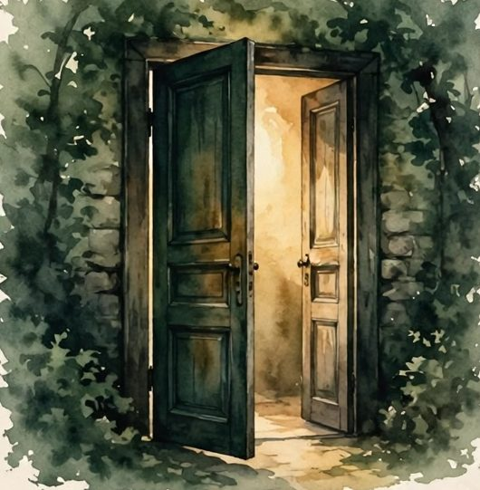
A tall door standing ajar, warm light waiting on its far side.
Every life, told backwards, arranges itself around a few moments. There is the letter that arrived on an ordinary morning, the conversation that was supposed to last five minutes, the small yes said almost without thinking, the door walked through because it happened to be open. Later, looking back, a person finds that the whole story leans on these few points the way a door leans on its hinges — quietly, completely, and without having been consulted. This house is built to hold those moments up to the light, one at a time, and to look at them without hurry and without decoration.
It is worth saying at the outset that almost none of these moments felt historic while they were happening. The day of the letter was also a day of shopping lists and weather. The sentence that changed everything was spoken in a kitchen, mid-task, by someone who had forgotten it by Friday. The house keeps both truths side by side: the weight the moment carries now, and the plainness it wore then. Neither truth cancels the other. A hinge does not need to glitter to hold a door, and a turning point does not need an audience to have turned.
The halls that follow walk the hinges in order — the loud ones and the quiet ones, the turns toward and the turns away, the slow ones that took a season, and the ones still being understood. Nothing here will argue that a life can be reduced to its turning points; a house is mostly corridor, landing, and ordinary room, and so is a life. But the hinges are real, and they are few enough to be visited. The keeper suggests beginning the way the house itself begins: at an ordinary door, with a hand on it, feeling for the small mechanism that lets it swing.
2The House of Hinges
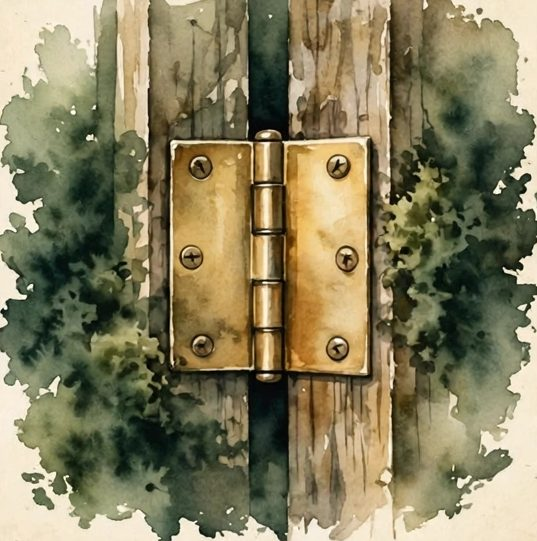
A brass hinge in close view, its screws seated, its pin polished by years of swinging.
The house stands at the end of a street of similar houses, and from outside nothing distinguishes it: same roofline, same garden wall, same step worn by the same weather. Inside, though, its arrangement is unusual, because certain of its doors did more than open and close. They rearranged the corridor. After they swung, the rooms of a life stood in a different order — what had been near became far, what had been locked became the front entrance, and whole wings that once seemed permanent turned out to be annexes. The keeper calls these the hinge doors, and tends them accordingly.
The keeper of this house is the Keeper of Hinges, and the work is unglamorous: oiling, tightening, listening. A hinge announces its condition to a patient ear — it speaks of weight carried, of seasons of neglect, of the door that was slammed once too often in a winter nobody mentions anymore. The keeper keeps a small workbench, a row of brass, an oil can, and a ledger in which each true hinge is entered with the date it was found. Not built, the ledger insists in its frontispiece. Found. The house is particular about that word, and the halls ahead will show why.
Visitors sometimes ask why a whole house is kept for a few pieces of hardware. The keeper's answer is that the hardware is where the house keeps its honesty. A door can be repainted, rehung in the imagination, described more grandly than it deserves. A hinge cannot be flattered. It either swings or it squeaks; it either bore the weight or it failed under it, and the screw holes remember which. To walk this house is to be asked, gently, to stop describing the doors of one's own life and to start examining the hinges — smaller, plainer, and far more truthful.
3Some Doors Change the Floor Plan
Most doors in a life are honest furniture. They open onto the room they always opened onto: the job continues, the town continues, the year's habits stack neatly against the wall. A person passes through a hundred such doors and the floor plan never notices. But now and then a door behaves differently. It is crossed in the morning as one might cross any threshold, and by evening the house has quietly redrawn itself — the corridor that led to the kitchen now leads to a different country, a different trade, a different understanding of who has been living here all along.
The house marks these doors not by their size but by their consequence. Some are grand: the emigration, the wedding, the signing. Others are so modest that the plan seems to have changed around a door nobody remembers choosing — a conversation accepted out of politeness, a book taken down because the intended one was missing, a seat taken on a train because the other carriage was full. The keeper refuses to rank them by drama. The ledger records consequence only: before this door, the plan read one way; after it, the plan read another. Everything else is commentary, and commentary, in this house, is kept in pencil.
There is comfort in this, if a visitor stays long enough to feel it. A floor plan that can change is a floor plan that is still being drawn, and a life whose plan changed once can change again — not on demand, and never by formula, but the way houses do: by use, by weather, by one more door whose hinges nobody has yet thought to test. The keeper walks new arrivals past the changed plans the way other houses show portraits. Look, the walls say. It has happened before. The house you are standing in is not the first draft, and there is no rule that says it must be the final one.
4A Hinge Is Small; the Door Is Not
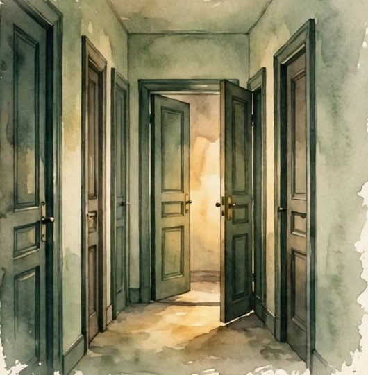
A hallway of doors along a green wall, one of them standing open.
Hold a door hinge in one hand and you hold a few ounces of brass and steel: two leaves, a pin, a handful of screws. Then consider the door it is asked to carry — oak, perhaps, taller than a person, swung ten thousand times across a lifetime, leaned on, slammed, decorated, mourned behind. The disproportion is the whole subject of this hall. Turning points work by the same unfair arithmetic. The cause is small enough to fit in a palm. The consequence is a household, a livelihood, a forty-year direction. Anyone looking for a cause as large as its effect will walk straight past the hinge, and most people do.
This is why the keeper is unimpressed by the search for enormous explanations. Lives rarely pivot on enormous things; enormous things are usually the visible sum of many small swings already taken. The hinge moments are modest almost to the point of embarrassment: a sentence, a signature, a seat, a yes, a departure five minutes early or five minutes late. Their smallness is not a flaw in the story. It is the story's most reliable feature, repeated in ledger after ledger, in house after house — the weight of a life is almost never hung on anything grand.
Small, however, does not mean fragile, and the keeper is careful with the distinction. A hinge earns its place precisely by bearing weight out of all proportion to its size, day after day, without ceremony. The moments in this hall's keeping did the same. They were not the loudest hours of their years, but they held. When a visitor marvels that so much could turn on so little, the keeper usually answers with the workbench itself: everything in this house that truly holds is small, oiled, and easy to overlook. The doors get the portraits. The hinges get the gratitude, which is heavier.
5Before and After Share an Address
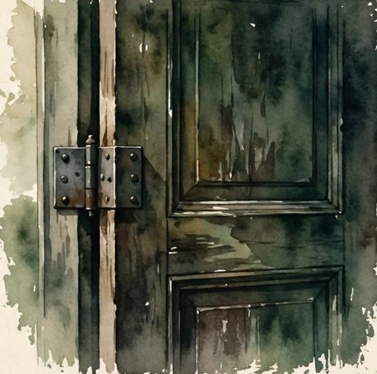
A small iron hinge beside a large wooden door, outmatched and entirely sufficient.
It is tempting, after a true turning point, to speak of the person before it as a stranger — that younger tenant who signed the lease, chose the road, believed the things that now seem borrowed. The house discourages the custom. Before and after share an address, one roof, one set of stairs; the post arrives for both of them at the same door. The keeper keeps the rooms of the before exactly as it keeps the rooms of the after, not as a museum wing but as part of the standing house, swept on the same round, entitled to the same lamp.
The practical reason is simple: the before is where the hinge was fitted. Whatever the turn was — chosen, suffered, stumbled into — it swung on hardware installed by the earlier life: the habits, the hungers, the half-formed beliefs that made that door, on that day, the one that opened. To disown the before is to saw at the very frame the after stands in. The house has seen visitors try it, and the result is always the same draughty corridor, the same door that will not sit true. Regret is permitted here. Renovation of the record is not.
So the keeper teaches a plainer grammar. Not two lives, an old one and a new one, but one life with a hinge in it — the way a year has a solstice in it, a real turn that changes the light without breaking the year in half. The before was not a mistake the after corrected; it was the corridor that led, by its own crooked honest route, to the door. Walk it without apology, the house suggests, and the after walks easier too. Both tenants sign the register. Both are wished goodnight by name.
6The Keeper Tests Each Hinge by Hand
The keeper does not trust appearances, and does not trust memory either, which is why every hinge in the house is tested by hand. The method is plain. A door is lifted slightly at its far edge, to feel how much of its weight the screws are truly carrying. It is swung slowly, then at walking pace, then let fall the last inch the way a tired person lets it fall at midnight. The keeper listens through all of it. A hinge that will bear a life's turning has a particular sound — unhurried, unbothered, almost bored by its own reliability — and the keeper can hear it the way a tuner hears a string.
This patience is the house's whole approach to the past. Most of us identify our turning points the way we identify weather from a window: by impression, by mood, by whatever the light happens to be doing today. The keeper insists on the slower audit. What actually swung here? What merely rattled? Which of these doors, tested by hand, turns out to be painted on the wall — a moment long described as decisive that bore, on examination, almost no weight at all? The ledger loses entries every year to this testing, and the house counts the losses as gains in accuracy.
The testing cuts the other way, too, and more kindly. Hinges are found that nobody had entered in the record: doors so quiet in their swinging that decades passed before anyone thought to ask what had hung on them. A kindness accepted. A town not moved to. A habit begun as an experiment and never formally adopted, which quietly rearranged the furniture of forty years. The keeper enters these without triumph and without reproach, in the same hand as all the others. Found late is still found. The hand learns what the story missed, and the story is better for having been corrected by touch.
7Not Every Door in the House Is One
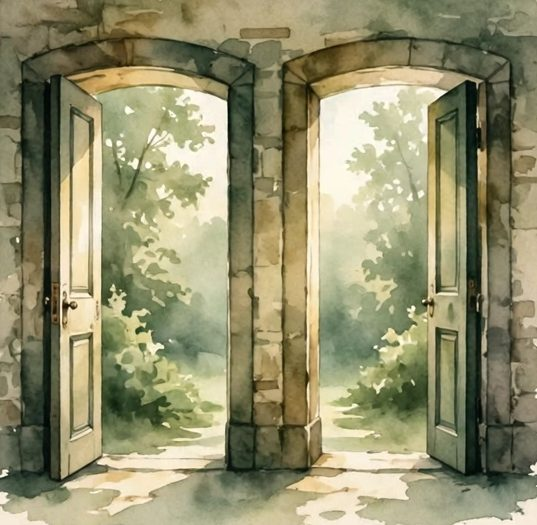
Two doorways side by side in morning light, only one of them load-bearing.
It would be tidier if every door in the house were a hinge door — if every threshold crossed had rearranged the plan, and a life could be told as a clean sequence of turns. The house is not tidy in this way, and does not pretend to be. Most of its doors are ordinary doors, and they are not failed hinges or lesser doors for it. They open onto the pantry, the linen cupboard, the spare room where the year's ordinary business is kept. A life is mostly this: rooms entered and left without consequence, mornings that led to afternoons exactly as scheduled.
The distinction matters because inflating every door into a turning point cheapens the true ones. A keeper who finds a hinge in every week of the calendar is not keeping a record but writing a romance, and romances, however flattering, make poor floor plans. The discipline of this house is mostly the discipline of refusal: this one mattered, this one did not, and this one — the hardest entry of all — cannot be told from its neighbors and is honestly recorded as unknown. The unknown doors are left in pencil. Some of them resolve with time. Some stay pencil for good, and the house lets them.
There is also mercy in the ordinary door, and the keeper points it out to visitors who arrive apologizing for uneventful decades. An ordinary door means a stretch of life that held its shape: work done, people kept, weather endured without rearrangement. The halls ahead honor turns, but they do not worship them. A house that turned at every door would be unlivable, a corridor of perpetual revolution; a life likewise. The ordinary doors are the walls between the hinges, and without walls there is nothing for a hinge to hold. Cross them without ceremony. Ceremony is being saved, deliberately, for the few that earned it.
8The Turn Is the Room
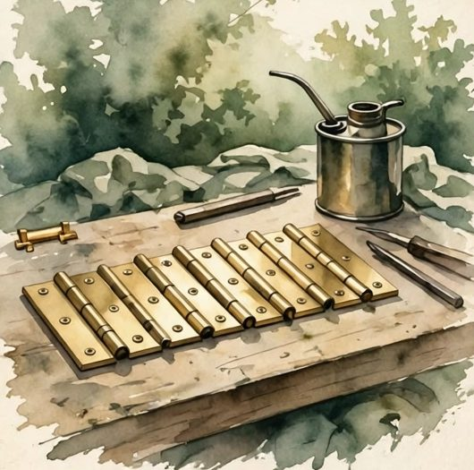
A workbench with brass hinges laid in a row beside a small oil can.
Ask the keeper where a turning point is kept and the answer surprises most visitors: not at the door. The door was crossed in a moment and belongs to that moment still — the step, the weather, the words exchanged on the threshold. The turn itself is the room beyond: the whole arrangement of days that the crossing made possible and then made ordinary. This is why the house speaks of turns as rooms rather than events. An event ends. A room is lived in. The letter took a minute to read; the room it opened has been occupied, furnished, and repainted for thirty years.
Seeing the turn as a room changes how it is tended. Events are commemorated; rooms are maintained. A visitor who treats a turning point as a monument visits it once a year with flowers and feels briefly loyal; a visitor who treats it as a room asks better questions — what is kept in here now, what has been stored here that no longer belongs, does the light still come in the way it did, or has the house shifted around it? The keeper has watched turning points sour under monument care, gilded and drafty, and thrive under room care, swept and aired and allowed to hold umbrellas.
It also changes the arithmetic of regret. A room can be rearranged without being denied. The house is full of after-rooms whose furniture has been moved a dozen times — the career entered through that door now shelved in the corner, the conviction formed in that season softened into a chair by the window. None of that moving betrays the turn. It is what turns are for. The door swung once; the room swings daily, with every life lived inside it. Stand in the doorway by all means, the keeper says. Then come in. The turn was never the threshold. It is everything the threshold let in.
9Enter by the Ordinary Door
Every guided tour of a famous house begins at the grand entrance, and this house declines to offer one. Visitors enter, as its own turns once entered, by the ordinary door — the one with the worn paint at handle height, the one used for groceries and weather and coming home late. The keeper insists on it as a matter of doctrine. Turning points do not use the ceremonial entrance. They come in with the shopping. They arrive on weekdays, in working clothes, mixed in with everything else the day was carrying, and they are usually halfway through the corridor before anyone thinks to ask their names.
This is worth dwelling on, because the memory prefers to rebuild its past with a grand entrance installed. It lays a carpet for the letter, strikes a bell for the meeting, hangs a lantern over the sentence. The house removes these fittings as it finds them — gently, without mocking the impulse, which is only love trying to give the moment its due. But the due it is owed is accuracy, and accuracy says the door was ordinary. The grandeur is real, but it arrived later, on foot, over years, like interest. It was not there at the crossing, and pretending otherwise misdates everything downstream.
Entering by the ordinary door also keeps the visitor honest about the future, though the house keeps its eyes mostly on the past. The next hinge, if there is one, will not announce itself at the ceremonial arch either. It will arrive as an errand, an interruption, a Tuesday. Nobody can live braced for that, and this house does not ask anyone to. It asks only for the retrospective courtesy: when the story is told, let the door be the door it was. Plain wood, worn handle, weather coming in under it. The turn happened anyway. It did not need the carpet, and neither does the telling.
10The House Keeps Both Sides of Every Door
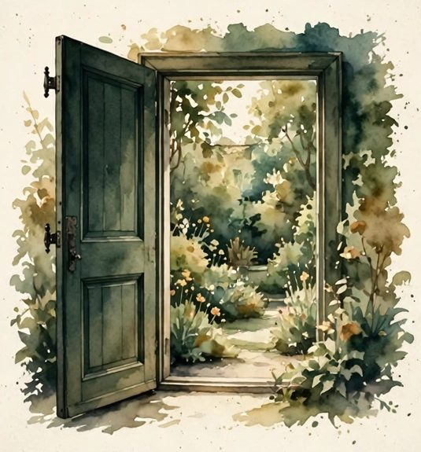
A house door standing wide open to a garden, light on both sides of the frame.
Stand at any true hinge door in this house and you can see, without moving, both of the lives it separates: the room behind, with its older furniture and its light at the old angle, and the room ahead, still smelling of fresh paint no matter how many years have passed. The house keeps both sides. This is not indecision and it is not nostalgia. It is structural. A door is defined by the two spaces it joins, and a turning point, faithfully kept, preserves the shape of what it turned from as carefully as what it turned toward. Erase one side and the hinge has nothing left to swing between.
Keeping both sides costs something, and the keeper does not hide the price. It means the before stays furnished — visited sometimes, spoken of in the present tense by accident, its chairs still able to receive the person who left them. Visitors occasionally arrive wanting one side bricked up: the old life condemned, the old self declared uninhabitable, the corridor sealed for hygiene. The house refuses the work. Bricked-up doors do not disappear from a floor plan; they merely become the wall everyone walks around, and the house has learned to prefer a door that can be opened, examined, and closed again in daylight.
What the keeping makes possible is a particular kind of peace, quieter than either triumph or closure. The person who can stand in the doorway — one foot's memory in each room, beholden to neither as a prisoner — has something better than a clean break: a working hinge. It swings when it needs to. A grandparent is remembered in the before-room without the after being betrayed; a lesson is carried out of it without the journey being repeated. The house keeps both sides of every door so that its keeper can, at last, live on either side without lying about the other.
11A Life, Hung on a Few Hinges
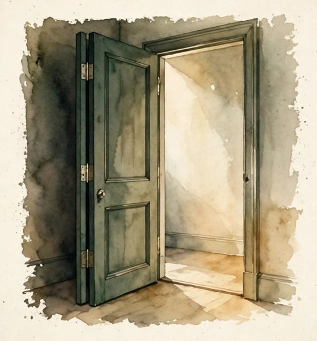
A door half open, half the room in light and half in shade.
Take the longest life the house has on record — ninety years, four countries, two trades, a houseful of descendants — and ask the keeper how many true hinges it hangs on. The answer, after the full audit, fits on one hand with fingers to spare. Five doors, perhaps six, across nine decades. Everything else was corridor: the long, ordinary, load-bearing stretches of routine that carried the life from hinge to hinge. This is not a disappointment in the record. It is the record's most consistent finding, repeated in house after house until the keeper stopped being surprised by it.
A few hinges is not a few experiences. The corridors between them are where the life actually happened — the work learned, the children raised, the friendships kept warm across unremarkable years. The hinges decided the direction; the corridors were the traveling. Confusing the two produces a familiar distortion, in which a person describes their whole existence as a string of dramatic turns and cannot account for the thirty calm years in the middle. The house accounts for them gladly. The calm years are not gaps in the story. They are most of it, and the hinges would mean nothing without their length to turn across.
There is a steadiness in knowing the count is small. It means the audit of a life is a possible task — an afternoon's honest work, not an archeology. A visitor can hold five doors in the mind at once, test each by hand, and say what swung and what it carried. It also means no one is required to find the record crowded with significance to call it a life. A house hung on three hinges stands exactly as well as one hung on seven. The number is not the grade. The keeper hangs the count by the door like a house number: plain, factual, and nobody's business to admire or pity.
12Mind the Hinge, Not Just the Door
The first hall ends with the house's standing instruction, painted nowhere and repeated everywhere: mind the hinge, not just the door. Doors invite narrative — they are photogenic, they have thresholds and keyholes and dramatic silhouettes against the light. Hinges invite work. To mind the door is to tell the story of the crossing, polished a little more at every retelling. To mind the hinge is to ask the plainer questions underneath the story: what bore the weight here, what has worn, what was fitted badly and has squeaked ever since, what small mechanism made the great swing possible and has never once been thanked.
Applied to a life, the instruction changes what gets examined after a turning point. The story will take care of itself; it always does. The hinge-work is slower and less photogenic: understanding which habit, which friendship, which half-conscious conviction served as the hardware of the turn — the thing installed long before, in an unremarkable season, that made this door the one that opened. People who mind only their doors know what happened to them. People who mind their hinges begin to know what in them it happened on, and the second knowledge is the one that generalizes. It is also the one that can be maintained.
The keeper closes the hall by demonstrating on the door nearest the desk: the door itself ignored, the hinge lifted, oiled, swung, heard. It is a small ceremony and deliberately undramatic, because the house's whole teaching is in the proportions. Great swings, small mechanisms. Loud arrivals, quiet hardware. A visitor who leaves minding hinges will misread fewer of their own doors afterward — will look, in any life including their own, past the drama of the doorway to the modest fitting that did the work. The hall door closes behind them on a hinge in perfect order. Nobody notices. That is the point, and the keeper is smiling.
13Told Backwards
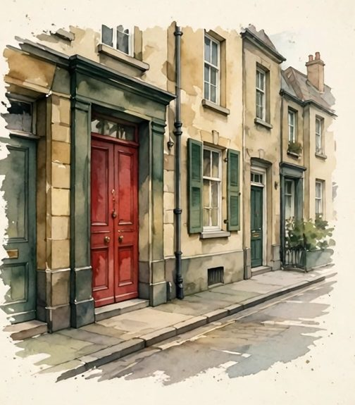
An ordinary street on a weekday, its row of doors closed, one of them painted red.
This hall begins with a confession about method: everything in it is told backwards, because backwards is the only direction in which a turning point can be seen at all. Standing inside the day itself, there was no turning point — there was weather, errands, a mild headache, a letter among the letters. The hinge exists only from the far side, the way a bend in a river exists only for someone looking at the map. The house does not apologize for this. It simply insists the direction of travel be admitted, the way honest maps admit which way is north.
Telling backwards is not lying, though it has a liar's tools lying ready to hand. From the far side of a turn, it is fatally easy to arrange the approach — to remember the morning as heavy with signs, the stranger's sentence as unmistakably loaded, oneself as having somehow known. The hall ahead will return to this polishing more than once. For now, the keeper asks only that the seam be visible: here is the day as it was lived, here is the day as it is told, and the distance between them is not deceit but perspective — the ordinary parallax of a life examined from its own far end.
There is an advantage to backwards telling that forwards living cannot offer, and the house claims it plainly: pattern. No one walking a corridor can see its turns; the shape of a life is a property of the plan, not of the walking. So the record is drawn up backwards, hinge by hinge, with the dates filled in where they can be and left honestly blank where they cannot. The drawing is not the life. But it is the only view in which the life has a shape at all, and this hall's work — careful, penciled, corrigible — is to draw that shape without improving it.
14At the Time, It Was a Tuesday
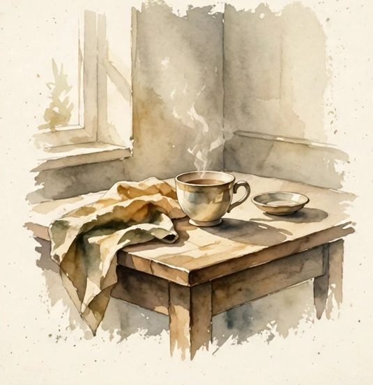
A kitchen table in mid-morning light, a teacup standing among the ordinary day.
Ask the keeper for the date of the most consequential turn in the record and the answer, checked against diaries and postmarks, is some of the plainest information the house holds: it was a Tuesday. Not a stormy midnight, not a solstice, not a birthday or a New Year with its ready-made symbolism. A Tuesday — shop shutters going up, a bus running its usual route, somebody's radio audible through an open window, the week not yet halfway to anywhere. The turn arrived dressed exactly like the day around it, and the day around it was as ordinary as days are legally permitted to be.
This plainness is recorded in the ledger without disappointment, because the house has learned to regard it as the signature of the genuine. Manufactured turning points — the kind assembled later for a better story — almost always arrive with weather: storms, sunsets, significant music swelling from somewhere. The Tuesday turns carry no such equipment. Their plainness is precisely what delayed their recognition, sometimes for years; who audits a Tuesday? The keeper has a whole drawer of them, each labeled in the same unexcited hand, and regards the drawer the way a jeweler regards uncut stones — which is to say, as the most valuable stock in the building.
There is instruction in it for anyone examining their own corridors. When the search for turning points keeps returning to the dramatic dates — the ceremonies, the catastrophes, the documented occasions — the keeper suggests widening the warrant to the weekdays. Ask not when everything was at stake, but what the shopping list said the week the direction changed. The hinge will be in there somewhere, between the tea and the bus fare, on a day whose only distinction was that the rest of the life has been quietly arranged around it ever since. It was a Tuesday. It usually is.
15The Moment Didn't Announce Itself
No trumpet attended it. This is the hall's recurring footnote, entered under turn after turn until the keeper stopped bothering to write it out in full: the moment did not announce itself. There was no pause in the day's machinery, no significance in the air that a sensitive observer could have caught, no feeling — this is the part visitors find hardest to credit — of standing at a crossroads. The person at the center of it finished the conversation, locked up, made tea, and thought about something else. If the hinge had depended on being noticed at the time, the record would be nearly empty.
The absence of announcement is not a failure of the moment but a feature of how hinges work. Announcement is a property of doors in stories, where an author can afford the lighting. In houses, the fittings that matter most are the ones installed without ceremony and used without thought: the stair tread that bears the weight, the beam inside the wall. A turning point is a beam, not a banner. It does its work inside the structure of the days, discoverable later by the shape of what it carried, invisible while it carried it. Expecting a fanfare is simply looking in the wrong category, like listening for the foundation.
What the house offers in place of announcement is retrospect with good manners. The moment will be found, if it is there — by the testing, by the plan, by the worn carpet of consequence leading to one particular door. Found late, it loses nothing. A hinge discovered after twenty years has been swinging for twenty years, and the discovery changes only the keeper's understanding, not the door's history. So the hall's counsel is unhurried to the point of calm: stop reproaching yourself for having missed the fanfare. There was no fanfare to miss. There was a Tuesday, a door, and a life quietly rearranging itself around both.
The Hinge Desk
One desk receives all correspondence for this house — questions, corrections, and word of any hinge: the letter, the small yes, the season that turned it slowly, and what the new floor plan feels like to walk. It is read in the order it arrives.
16Historic Is a Word Added Later
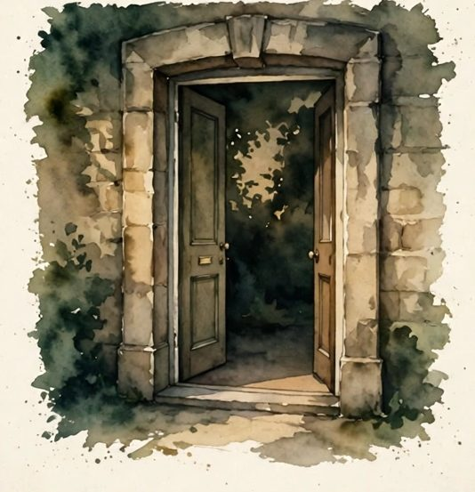
A doorway unchanged in evening light, the same door it was on the day itself.
The word historic appears nowhere in any diary the house has ever been lent. It appears in memoirs, in anniversary speeches, in the accounts written when the shape of the life had become visible and someone went back to mark the bends. This is not an accusation. Historic is a legitimate word — it is simply a later word, manufactured by distance, and the house insists it be dated as carefully as the event it describes. The day was a day. The history was added afterward, by hand, the way a caption is added to a photograph: helpful, often accurate, and never to be confused with the exposure.
Dating the word matters because its glamour leaks. Once a moment is certified historic, everything around it starts to borrow significance — the chair it happened in becomes the chair, the route walked that morning becomes a pilgrimage, and the person at the center of it, who was at the time mostly thinking about lunch, is recast as a figure striding toward destiny. Destiny is a word this house does not use, and the reason is visible in the ledger: every entry that borrowed destiny's lighting had to be quietly re-entered later, in pencil, at its true size. The true size was always smaller and always more interesting.
So the keeper's practice is to keep two columns. In one, the day: weather, errands, the words actually said as nearly as they can be recovered. In the other, the history: what the day turned out to have been carrying. Both columns are the record, and neither is permitted to overwrite the other. A visitor who reads only the second column gets a legend. A visitor who reads only the first gets a shopping list. The house maintains that a life is legible only in the double entry — the Tuesday in the left hand, the turning in the right, and the honest air between them where the years did their quiet work.
17The Retelling Finds the Hinge
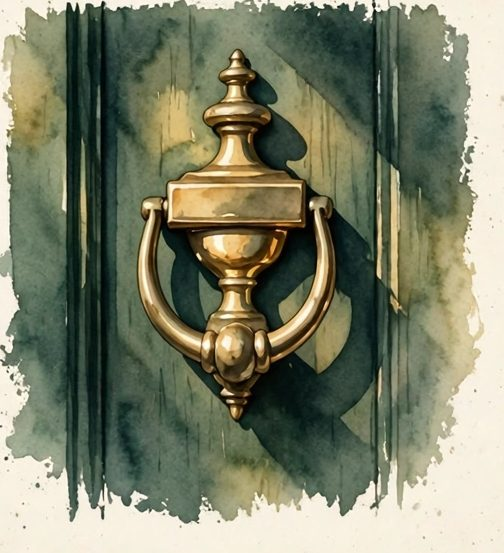
A brass door knocker catching the sun, bright from being handled and retold.
Nobody sets out looking for the hinge, at first. The search usually begins as something else — a memoir to write, a question from a grandchild, a sleepless inventory at an age when inventories come uninvited. A person reviews the corridor of the years looking for an explanation of the present arrangement, and the retelling does what retelling always does: it simplifies. A hundred influences press on any outcome, but a story can carry only a few, and so the story, quite without malice, reaches for the moments that can bear the weight of explanation — and there, under its hand, the hinge is found. Found, and in the finding, partly made.
The house is comfortable with this doubleness, and visitors looking for a scandal in it are disappointed. The hinge is not invented out of nothing; the retelling cannot make a door swing that never swung, and the consequences — the changed plan, the rearranged corridor — are checkable facts of the life. But the selection among a hundred real causes is the story's own work, and a different story, honestly told, might hang the same life on a neighboring door. The ledger therefore records each hinge with its teller. The record is not the turn. The record is the turn as found by this retelling, on this date, under this light.
What the retelling adds, besides selection, is shine, and the next room deals with the shine. Here it is enough to note the mercy built into the method: because hinges are found in the retelling, they can be re-found. A life retold at seventy need not keep the hinges chosen at forty, when different consequences had ripened and different doors stood visibly ajar. The house has re-entered many a record without embarrassment. Finding the hinge is a craft practiced on a living material, and the material — the corridor behind, the plan ahead — does not hold still merely because the keeper once drew it.
18Memory Polishes the Brass
Brass brightens where it is touched, and a story brightens where it is told. Every retelling of a turning point passes a hand over the metal: the sentence said that day grows a little more quotable, the pause before the answer lengthens by a well-judged beat, the weather sharpens its symbolism, and the speaker's own younger self acquires, almost imperceptibly, a touch more foresight than the diary supports. None of this requires dishonesty. It is friction doing what friction does. The keeper, who handles the actual brass of the house daily, recognizes the process professionally and refuses to be shocked by it.
The danger is not the shine but the confusion of shine with substance. Polished brass is still brass; the fitting does its work exactly as well bright as dull, and a polished story is equally a story — provided nobody mistakes the gloss for the event. The trouble begins when a keeper starts maintaining the shine at the expense of the swing: trimming an inconvenient witness, varnishing a motive, replacing a rusty but load-bearing fact with a bright decorative one. The house has a test for it, administered kindly. Swing the door. A story whose hinge still bears weight — whose consequences follow, whose dates hold, whose other witnesses nod — may shine as it pleases. The shine is then simply the patina of love.
For the dull facts, meanwhile, the house keeps a cloth and a policy. The policy is periodic dullness: every record is taken down at intervals and read in the flattest available light, preferably against documents — letters, dates, the testimony of the unimpressed. What survives flat reading is the hinge. What melts is admitted to have been polish, and is not mourned; polish has its own honest uses, chiefly at anniversaries. The keeper schedules the flat readings the way the stairs are swept: not because the house is suspected of filth, but because a house unloved by routine accumulates exactly what it least notices. Bright is beautiful. True is load-bearing. The brass, given the choice, prefers to be both.
19Other Witnesses, Other Hinges
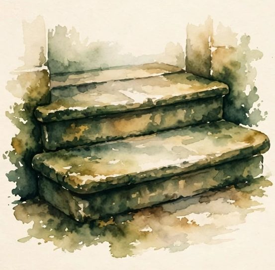
A doorstep worn smooth by years of arrivals, each visitor certain of the day.
Every famous hinge in the record was witnessed, if it was witnessed at all, by more than one person, and no two witnesses have ever returned the same door. The other party to the great conversation remembers the weather differently and the words in another order. The friend who was present dates the turn a year later and hangs it on a different remark entirely. The house keeps these accounts side by side without attempting a merger, having learned that the merged version — smooth, single, agreed — is the one artifact in the building guaranteed to be false. Real hinges, like real doorsteps, wear unevenly under different feet.
This is easier to accept in principle than across a family table, where the competing hinge is sometimes a competing claim: whose courage, whose sacrifice, whose sentence started everything. The keeper's rule is hospitality. All honest tellings are entered; the ledger has wide margins precisely for the purpose. A telling is honest not when it matches the master copy — there is no master copy — but when its teller has dated the history, admitted the polish, and left the pencil marks visible. Under that standard, two siblings can hang one childhood on two different doors and both be telling the truth about the house they actually grew up in, which was never quite the same house.
The visitor examining a private corridor should expect the same plurality at home. The moment one person names as the turn of a marriage, the other may locate two years later, in a sentence the first does not remember saying. Neither needs correcting. A hinge is where the weight bore down in one person's plan of the house, and plans, however surveyed, are drawn from inside. The house's counsel is to record generously and argue sparingly — the doors are large, the hardware is small, and there is room in the ledger for every witness whose account still swings true under its own weight.
20The Story Chooses Its Turning Points
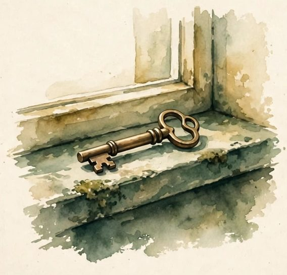
An old key resting on a windowsill, kept long after its door was painted over.
A life, raw, contains more candidate moments than any story can use: every year offers its letters, its meetings, its narrow escapes and sudden weathers, and a record that admitted them all would be not a story but a warehouse. So the story chooses. It chooses the way a river chooses a course — not arbitrarily, and not by committee, but by the accumulated pressure of consequence. The moments that become turning points in the telling are the ones the later life kept flowing through, the doors still visibly ajar in the present plan. The rest are not denied. They are simply not load-bearing in this version, and the house keeps them in the warehouse without prejudice.
Knowing that the story chooses is a protection against two opposite errors. The first is believing the chosen hinges were the only forces at work — a tidiness that insults the warehouse, where a thousand small pressures did their unrecorded labor. The second is believing that because the story chose them, the hinges are mere fiction, decorative ironwork screwed to a blank wall. The keeper rejects both. The choice is real choosing among real doors, made by the only surveyor available — the person who has to live in the resulting plan. A chosen hinge is a judgment, and judgments, unlike inventions, can be examined, defended, and revised.
Revision, in fact, is the sign the choosing was honest. The stories that worry the keeper are the ones that have never changed a hinge in forty years of retelling — plan after plan identical, every door where the first draft put it. Lives do not hold that still, and neither does evidence; a story that cannot revise its turning points has stopped being a story about a life and become a plaque about one. The house prefers the penciled ledger to the plaque in every case. Brass polish is expected here. Marble is not permitted. The story chooses its turning points — and a good story, like a good keeper, chooses them again whenever the doors themselves say otherwise.
21A Hinge Can Be Discovered Decades Later
Some hinges announce themselves in the audit at once; others keep their counsel for decades. The house's record holds a turn that swung in a man's twentieth year — a posting accepted, a ship boarded — and was not entered in any ledger until his seventieth, when a grandchild's question sent him walking his own corridor with a lamp. Nothing about the day had changed. The day had been waiting, with the patience of all load-bearing things, for someone to test the door by hand. He stood a long time, the keeper was told, at a threshold he had crossed ten thousand times in memory without once feeling its weight.
Late discovery is not a special category of hinge; it is the ordinary category, arrived at honestly. Most turning points are not recognized in their decade, let alone their day, because recognition requires consequences, and consequences are slow travelers. The career must unfold before the interview can be named its hinge; the marriage must weather before the meeting can be weighed. The house therefore keeps its ledger permanently open, ruled for additions in any year, and treats the newly found old hinge with the same respect as the famous ones. Age of discovery is not recorded as a defect. It is recorded as the date the light reached that part of the corridor.
There is a particular tenderness in the late-found hinge, and the keeper admits to favoring them. A person who discovers, at seventy, the door their twenties turned on has been given back a piece of their own architecture — the corridor suddenly makes more sense, several locked rooms explain themselves, and the self that made the crossing looks less like a stranger and more like a founder. Nothing can be redone, and the house offers nothing to redo it with. But a plan understood is a different house to live in than a plan merely inhabited, even — especially — in the years when most of the living is behind. Found is found. The lamp is not particular about when it is lit.
22Before the Story, There Was Just the Day
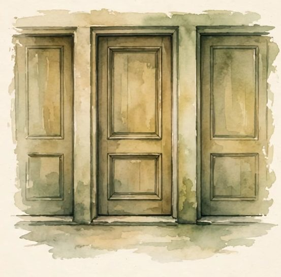
An unremarkable door in a row of doors, its number long since painted over.
Before the story, there was just the day: wake, wash, work, weather. It had no outline around it, no chapter break fore or aft, and it blended with its neighbors so thoroughly that for years afterward it could not be picked out of the line of days at all. This is not the story's failure. It is the day's nature, and this room exists to insist on it, because everything the hall says about hinges depends on remembering that the raw material of every turning point was once indistinguishable from the raw material of everything else. The day was not hiding its significance. It had not been issued any.
Consider what the day contained besides the famous moment, for the record's honesty requires the inventory: a meal eaten without attention, a chore postponed, three conversations that led nowhere and were forgotten by supper, a small worry that came to nothing, an hour of perfectly ordinary tiredness. The turning point shared its date with all of this. It queued for the same hours. When the story later lifts the moment out and sets it in a frame, the rest of the day is left standing in the corridor like relatives at a wedding photograph — unchosen, unspecified, and entirely real. The house asks that they be acknowledged in the telling, at least in a footnote's tone of voice.
Acknowledging them does more than decorate the record; it corrects its physics. A moment extracted cleanly from its day begins to look self-caused, inevitable, lit from within — and then the whole doctrine of hinges goes wrong, because the next person goes hunting for self-evident moments and finds none and concludes their life has none. The truth is kinder and plainer. Every hinge was embedded in a day exactly as muddled as the days around it. Before the story, there was just the day. After the story, there still is — kept in the left-hand column, holding the famous moment up the way soil holds a fence post: unsung, and doing most of the work.
23The Ordinary Day Deserves Its Due
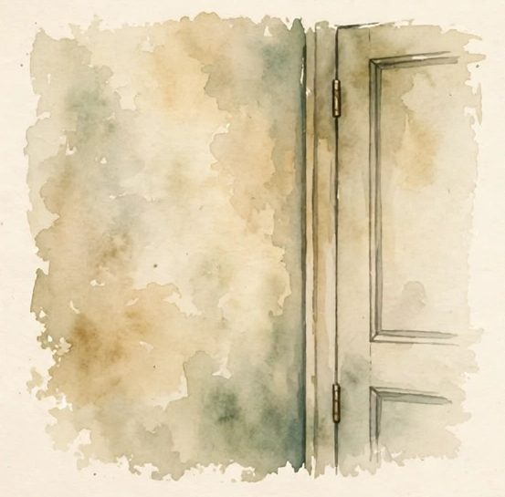
A plain wall beside a door, nothing marked on it, holding the house up all the same.
The ordinary day has a claim on this house, and this room is where it is pressed. The Tuesdays that carried turning points get their rooms; what of the thousands that carried nothing but lunch? The keeper's answer is a matter of house policy: the ordinary day is not the turning point's packaging, to be discarded once the jewel is lifted out. It is the medium the whole life was lived in, the wallpaper and the weather of it, and a record that keeps only the hinges has kept the skeleton and thrown away the life. The plan on the wall is not the house. The house is mostly Tuesday.
There is a practical tenderness in giving the ordinary day its due: it returns the past to a livable scale. A childhood remembered as three famous moments and a blur is a childhood misfiled; the blur was the substance — the long afternoons, the recurring meals, the particular sound of that house at that hour — and the hinges merely decided which of several possible blurs it would be. Visitors who recover the ordinary day find, often with surprise, that the famous moments shrink slightly and the life grows. The ledger is not threatened by this transaction. It is fulfilled by it. Accuracy was never the enemy of meaning here.
So the house keeps a custom the keeper calls the weekday round: now and then, in the audit of any life, a day is chosen at random from a hinge year and read entire — the weather, the errands, the unremarkable hours — with the same attention the famous date receives. Nothing is ever found in these readings that changes the record. Everything in them changes the keeper's feeling for the record, which is a different and larger effect. The ordinary day deserves its due because it paid for everything: all the turns, all the corridors, all the years in between. The house stands on it. The house says so, in this room, on the record.
24Told Backwards, Told Honestly
The hall of backwards telling ends where it began, with the terms of the house's honesty laid out in one place. Told backwards: admitted, because no hinge is visible from anywhere else. Told honestly: required, because a backwards story has every tool of flattery within reach and must formally renounce them. The renunciations are specific. The day keeps its plainness in the left-hand column. The history is dated in the right. The polish is allowed its shine but not its substitutions. Other witnesses keep their doors. And the word destiny, with its whole glittering family, is left at the door like wet boots — not despised, simply not permitted on the floors.
What remains after the renunciations is not a smaller story but a sturdier one. A hinge that survives honest telling — plain day, dated history, unmerged witnesses, consequences that still follow under test — can bear the weight a life actually puts on it, which is considerable: explanation, instruction, the occasional three-in-the-morning audit. Decorative hinges fail under that weight, and their failure is always misread as a failure of the life. The house's position is that the life was fine; the fitting was theatrical. Honest telling is this hall's whole technology for telling the difference, and it costs nothing but the pleasure of the varnish.
The keeper closes the hall with the ledger open, which is the house's way of saying the record is not finished and was never meant to be. New witnesses write. Old entries are re-read in flatter light. A hinge found at seventy corrects a plan drawn at forty, and the correction is entered in the same book, in full view of the earlier hand. This is what told honestly finally means here: not a story purified of error — no such story exists — but a story kept the way a house is kept, swept and audited and lived in, its hinges tested by hand. The next hall is louder. The keeper advises enjoying it without believing it entirely.
25The Loud Ones
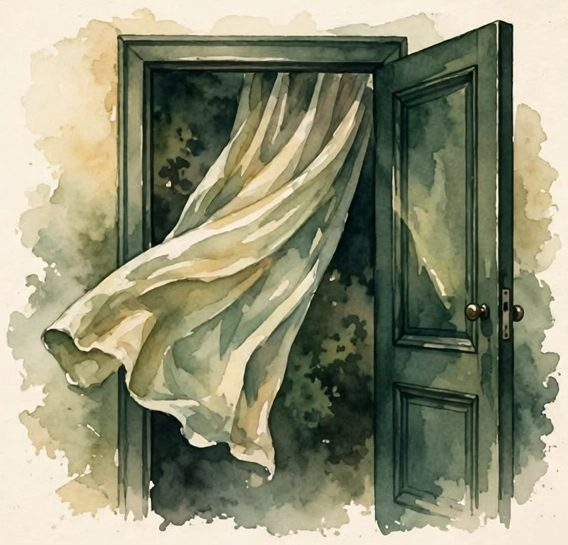
A door flung wide against its wall, the curtain blown inward by the gust.
This hall keeps the loud ones, and it keeps them without apology, because loud is not the same as false. Some turning points arrived exactly as turning points are supposed to arrive: with slamming, with weather, with the household woken and the neighbors informed. The door torn open, the resignation spoken aloud in the office, the proposal, the news read in a clear voice, the night the unsayable was finally said and the furniture of a family rearranged itself by morning. The house has rooms for these and keeps them swept. Volume, in the record, is neither evidence nor disqualification. It is simply volume.
The loud ones have advantages their quiet cousins lack, and the keeper lists them fairly. They are dated; nobody argues about which week the slammed door slammed. They are witnessed; the corridor was full. And they carry a kind of mercy for the person at their center, who is spared the worst ambiguity of the quiet turns — the lifelong uncertainty about whether anything happened at all. The loud hinge declares itself. Its keeper can proceed directly to the work of living in the after, without spending decades on detection. Many visitors, reading ahead to the quieter halls, feel a pang of envy for this clarity. The keeper lets the pang stand. It is honestly come by.
But this hall's later rooms will show the other side of the ledger: the noise that covered a quieter hinge swinging in the same season, the loud door honored for fifty years while the true one bore the weight unlisted, two rooms down. The loud ones deserve their keeping. They do not deserve the whole record. The keeper asks the visitor to walk this hall the way one walks a foundry floor — with respect for the machinery, with attention to what the noise might be hiding, and with the hand ready, always, to test what the ear cannot settle. Volume first. Verification immediately after.
26The Door That Slammed
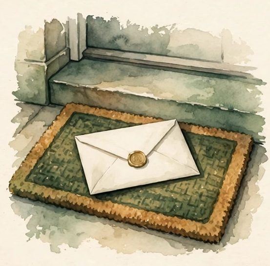
A sealed letter lying on a doormat, the hall draught moving its corner.
Every house in the record has one: the door that slammed. It may have been a literal door — the house does not insist on metaphor where the carpentry cooperates — but more often it is the decision delivered at full volume: the resignation, the refusal, the final answer given in a voice that carried to the street. The slam is the sound of a door announcing that its swinging days are over, that the corridor beyond it will be reached, if it is reached at all, by another route. As turning points go it is the least ambiguous in the building, and the ledger enters it in ink.
The keeper's examination of slammed doors turns up a consistent finding: the slam is almost never the hinge. It is the hinge's public ceremony. The true fitting — the slow accumulation of weight, the season of small corrosions, the sentence rehearsed in a hundred showers — did its work quietly over years, and the slam merely reported it at a volume the whole corridor could hear. This matters more than it seems. Lives that date the turn from the slam misdate everything built on it, crediting one afternoon with work done by a decade. The house re-dates without arguing: ceremony in the right-hand column, hardware in the left, both honored, neither confused.
None of this diminishes the slam itself, which had its own real work to do. A door slammed is a door whose closing can be built on; the person who slams it has, whatever else is true, located the frame and committed their weight. The after-rooms of slammed doors in this record are notably well kept — furnished early, argued about less — because the turn arrived with its date and its witnesses attached. The keeper oils these hinges rarely, since they seldom swing now, but oils them all the same. A door that bore the great noise deserves its maintenance. So does the quieter machinery underneath, dated correctly at last.
27The Letter That Arrived
Of all the loud hinges, the letter is the one the keeper handles with the most respect, because the letter is a door that arrived by post. It lay on the mat among the bills and circulars — the house never tires of this detail — indistinguishable in weight and size from a seed catalog, and it contained the rearrangement of everything. The acceptance. The refusal. The news from the solicitor, the regiment, the hospital, the stranger who turned out to be family. A person could hold the unopened envelope at breakfast and be, without knowing it, holding the last minute of the old floor plan in an ordinary hand.
Letters earn their volume honestly. Unlike the slammed door, the letter usually is its own hinge: the weight was in the envelope, and everything after — the rereading at midnight, the showing it to others, the drafting of replies — was consequence, not cause. The record is full of their physical afterlives. Letters kept in drawers for sixty years, their folds gone soft as cloth. Letters burned in the year they arrived and regretted, in the specific way of the irreversible, for sixty more. The keeper enters both kinds in the same ink. A destroyed letter is not a destroyed hinge; the door it opened stays open in the plan, and the ash is merely a filing decision.
The house also keeps the letter's quieter cousins in this room, under the same heading: the message seen too late, the notice pinned where notices go unread, the invitation that arrived the week after the event it would have changed. These are the letter's shadow entries, and the keeper records them with unusual care, because they prove the doctrine of the hall from the negative side. The hinge is not the paper. The hinge is the information crossing the threshold of a life at the moment it can still be acted on. Paper is only its favorite vehicle. The mat by the door, in this house, is swept like an altar and examined like a border — which, on the evidence of the record, is exactly what it is.
28The Meeting Nobody Planned
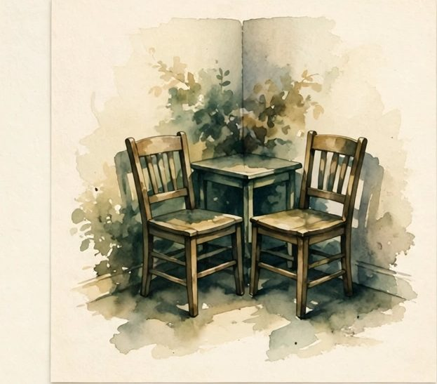
Two chairs drawn close at a corner table, a meeting with no appointment behind it.
No diary records it in advance, no secretary arranged it, and both parties, interviewed separately decades later, described it as an accident they very nearly avoided. The meeting nobody planned: the delayed train that put two strangers in one compartment, the wrong room entered at a conference, the neighbor met on the stairs the one week both were home. The house keeps a whole shelf of these, and the keeper observes that the lives they rearranged include an outsized share of the record's marriages, partnerships, rescues, and vocations — as if the plan, left unsupervised for one afternoon, did its boldest work.
Chance is the easy word for it, and the house permits the word while refusing the shrug that usually follows. The meeting was unplanned, but the corridor it happened in was not: someone chose the trade that required the conference, the town that contained the staircase, the habit of taking that train. Hinges of this kind swing on hardware installed by a hundred deliberate acts, and the meeting is merely where the accumulated preparation met its occasion. The keeper enters them so — prepared, unplanned — and finds the double entry dissolves most of the argument about whether such turns are luck or character. On the evidence of the record, they are character, arriving disguised as luck, on a delayed train.
What the house will not do is turn these meetings into a method, because it has tested the method's literature and found it empty. No one can schedule the unplanned meeting; the corridor cannot be haunted strategically; a life lived in deliberate readiness for lightning is a life spent in a doorway, getting wet. The teaching here is strictly retrospective: when the audit finds such a hinge, honor it accurately — the preparation in one column, the occasion in the other — and let the wonder be. Some doors open because a hand built them to open. Some open because the whole house had been quietly leaning that way for years. The keeper oiled both kinds this morning, and could not tell you, swinging them, which was which.
29A Sentence That Reorganized the Furniture
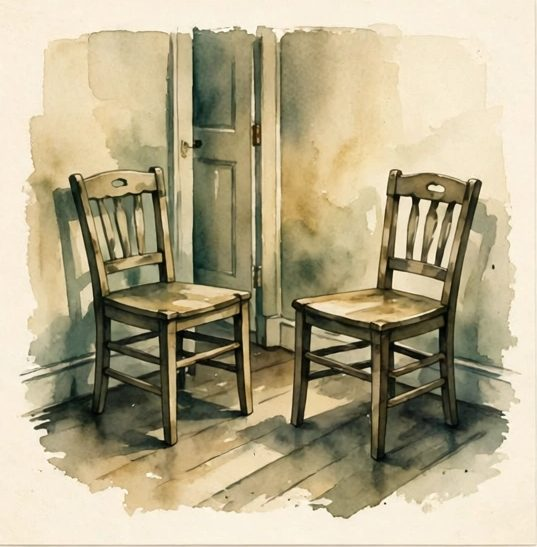
A room with its chairs all turned toward one another, mid-conversation forever.
It is filed in the record under sentences, and it is always short. Someone — a teacher, a foreman, a grandmother, a stranger whose name was never learned — said one sentence, and the furniture of a life stood up and rearranged itself. You could run the place yourself. Nobody is coming to check whether you stay. He is not coming back, and the money is yours now. The keeper collects these sentences the way other houses collect keys: labeled by door, never improved in the copying, because their power was never in their eloquence. Read cold, half of them are ordinary to the point of comedy. Their hearers are not laughing. Context was the amplifier, and context does not keep.
The sentence works, when it works, because it arrives at a room already furnished for it. Years of quiet preparation — the doubt rehearsed, the alternative imagined and shelved, the weight already shifting on the hinge — wait for a sentence the way a hillside waits for the last inch of rain. This is why the same words, spoken to the same person a year earlier, would have been weather. The house is firm on the point, because it protects both parties: the speaker, who is credited with far more power than any speaker holds, and the hearer, whose long invisible readiness is the true story. The sentence reorganized the furniture. It did not build the room, stock it, or teach its occupant to want it differently. That work was already done, quietly, by the life itself.
For the audit of one's own corridor, the sentence-hinges are the hardest to test by hand, since their evidence is mostly an echo. The keeper's method is consequence, as always: ignore the quotability, examine the plan. Did the furniture actually move — the trade changed, the town left, the treaty signed with oneself and then kept? Where it moved, the sentence is entered as a true hinge regardless of how it sounds in the retelling. Where it did not move, the sentence is refiled under weather: memorable, beloved, retold at dinners — and bearing no weight at all. The house keeps a thick folder of those, too. It is read with great affection and cited in nothing.
30The Night Everything Was Said
The record knows the night: it begins after supper in most of its versions, it lasts until the small hours in all of them, and by morning the household's constitution has been amended. Everything was said — the grievance kept for a decade, the fear under the grievance, the hope under the fear, coming up in layers like water through a cracked floor. The house keeps several such nights and notes their shared architecture: they are rarely planned, they cannot be hurried, and they end not when the talking is finished but when the talking changes register — when both parties hear, usually in the same minute, that they have stopped performing the argument and started conducting it.
A night of this kind is a hinge with the unusual property of being visible while it swings. The participants in the record almost always knew, somewhere in the third hour, that the corridor was rearranging — and this knowledge is precisely what distinguishes the true all-night hinge from the ordinary domestic storm, of which the record also keeps plenty, filed under weather. The storm spends itself and the plan is unchanged by breakfast; the same chairs face the same way. The true night ends with the chairs moved: a treaty, a parting, a confession accepted into the family's permanent record, after which certain sentences can never be unsaid and — this is the part the keeper underlines — were never meant to be.
The aftercare of such nights is this room's practical counsel. They are load-bearing and they are exhausting, and the lives around them make a common error: attempting a second sitting the following evening, to finish, to clarify, to win back or give back the last point. The house advises against it in the strongest terms its register allows. What was said on the true night was said by the whole household of the self at full session; the next evening's supplement is a committee of the tired. Let the amended constitution stand a season before amending it further. The chairs are moved. Sit in them a while. The corridor will still be there, rearranged and honest, when everyone has slept.
The Hinge Desk
One desk receives all correspondence for this house — questions, corrections, and word of any hinge: the letter, the small yes, the season that turned it slowly, and what the new floor plan feels like to walk. It is read in the order it arrives.
31Doors Opened by Other Hands
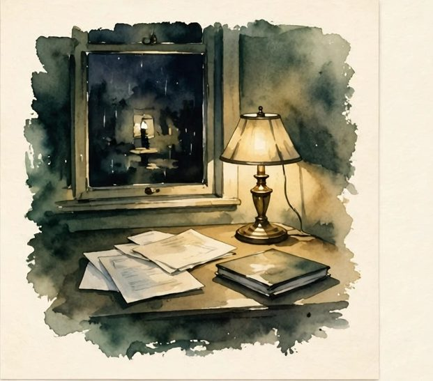
A room at night with one lamp lit, papers set down where other hands left them.
Not every hinge in a life is swung by its owner, and this room keeps the turns that arrived through other people's agency: the door opened by a hand that was not yours. The mentor who made the introduction, the stranger who intervened, the official who chose — for reasons never fully explained — to stamp the paper rather than return it. In darker entries, the door opened by an enemy's carelessness, the rival whose blunder cleared the field. The house records these hinges with care, because they resist the two easiest stories: the story in which the keeper of the life did everything, and the story in which they did nothing.
Between those flattering and absolving fictions stands the record's actual finding, which is collaboration. Other hands open doors; they do not walk through them, furnish the room beyond, or live in it for forty years. The introduction was made by the mentor, but the corridor beyond the door was walked by the introduced. The stamp was the official's, but the life built in the stamped country belongs to the life. The house's grammar for these hinges is precise and the keeper enforces it on every entry: opened by, never owed to. A door opened by another hand becomes, from the moment of crossing, the crosser's own — maintenance, gratitude, and all.
Gratitude, accordingly, is kept in its own column, where it cannot corrupt the account. It is real — the record is warm with it — and it is finite. The person who spends a lifetime feeling owned by the hand that once opened a door has mistaken the fitting for the house. The keeper's counsel, given often at this desk, is to pay the debt in the only coin the record honors: by holding a door, in one's turn, for someone whose name the future will enter in somebody else's ledger. The hinges of other hands are repaid forward or not at all. Meanwhile they swing in this room, oiled by two households, and neither household is asked to apologize for the arrangement.
32The Call That Came in Time
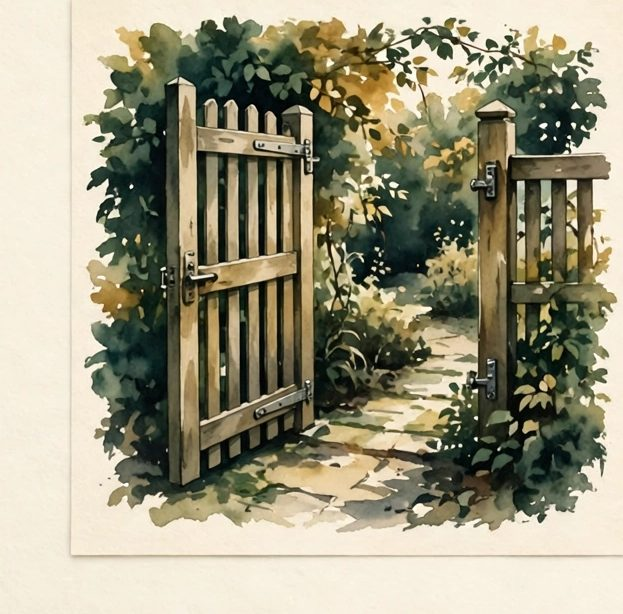
A garden gate swinging open inward, unlatched at exactly the needed hour.
The call that came in time is the hinge with the narrowest margin in the building, and the keeper keeps it in a room by itself, like something that ticks. An hour later and the ship would have sailed, the offer lapsed, the train's conductor persuaded or the patient's chart marked otherwise. The record is precise about these margins because everyone involved was precise about them, forever: the whole corridor of the after is measured against the width of that one hour, and no one who lived through such a call ever quite stops hearing how close the silence came to being the whole story.
The house is careful, though, about what the narrowness proves. It does not prove that the life was watched over; it does not prove it was lucky in any general way; it proves that this hinge swung on a margin of an hour, full stop, and the keeper files the theology of it under private belief, where the house takes no position. What can be recorded publicly is the effect on the keeper of the life: a permanent attentiveness to telephones, a tenderness toward the ringing of them, an unwillingness — reasonable, on the evidence — to let a call go to the machine on days that feel ordinary. The ordinary day, this room notes grimly, was precisely the uniform the great call wore when it arrived.
For the audit, these hinges pose the mirror-image problem of the quiet turns: nobody has trouble finding them. The trouble is the shadow they cast, the calls that did not come in time, kept in a later hall where such things belong. Here the house keeps only the arrived ones, and keeps them with a plain gratitude that needs no doctrine to support it. A door swung; a corridor opened; a life went one way and not the other, on the strength of an hour. The keeper oils the gate, checks the latch, and records the time of the call to the minute. It is the only entry in the ledger where the minutes are kept. They were, in the most literal sense on file, the whole difference.
33Sudden Weather
Some turns arrive as weather: system-wide, indifferent, and impossible to attribute to any hand. The war that redrew the map and every address on it. The fever year, the flood year, the year the factory closed and a town's whole corridor system was rearranged in a season. In the record these are the largest hinges by reach — they swing in thousands of houses at once — and the smallest by personal agency, which is exactly the proportion the keeper insists on recording. A weather hinge did not choose its keeper. Its keepers did not choose it. The ledger's weather column exists so that neither party is credited or blamed for the climate.
The keeping of weather hinges differs from all others in the building, because the maintenance is not the maintenance of a door but of a house that must go on standing in a changed climate. The record shows the pattern across its worst years: the families that fared best were not those with the strongest doors but those quickest to re-read the plan — to stop mourning the corridor that led to the drowned garden and start furnishing the one that led uphill. This is not offered as a method; weather cannot be scheduled and neither can grace under it. It is offered as the record's honest summary of what the survivors, asked afterward, actually described doing: grieving briefly in public, adapting early in private.
The house also keeps, in this room, the inverse obligation: not to inflate private weather into climate. A personal setback is a door, and it is kept as a door, with its own real weight; calling every hard season a war corrupts the ledger twice — once by exaggerating the entry, once by spending the word the true weather years need. Proportion is this house's whole method of respect. The storm that took the roof off ten thousand houses gets the weather column. The storm that took one fence gets a smaller, accurate page of its own. Both are entered. Neither is exaggerated. The rain, the keeper notes, never once asked to be exaggerated, and neither did the fence.
34The Loud Hinge Is Not Always the True One
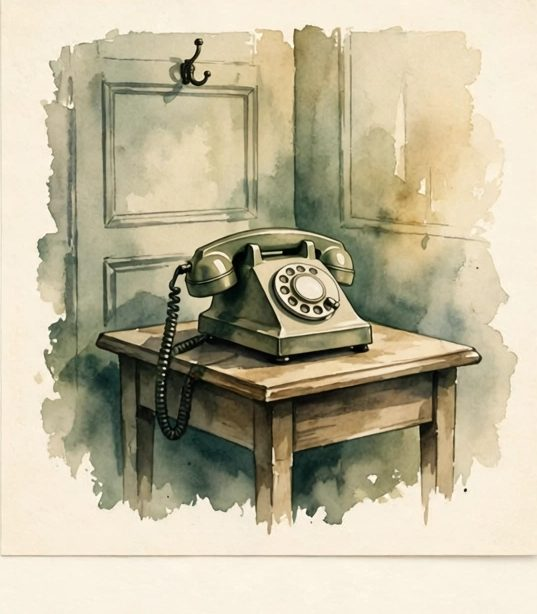
A vintage telephone on a hall table, loud in the quiet house at midday.
Now the hall delivers its warning, earned by every room before it: the loud hinge is not always the true one. The record contains a celebrated case — the keeper could show you a shelf of them — in which a family dated its whole rearrangement from a famous slammed door, a parting scene at full volume, witnessed by the street. Two corridors down in the same life, unlisted for forty years, stood the true fitting: a quiet job quietly accepted the following spring, which moved the household to the town where everything else in the story then happened. The slam changed the volume of the life. The acceptance changed its address. Only one of those is a floor plan.
The confusion is natural enough to deserve sympathy rather than scorn. Loud hinges are dated, witnessed, and dramatic — they arrive pre-packaged for the record, with the story's work half done. Quiet hinges must be detected, and detection is labor. A storyteller, even an honest one, reaches for the material that comes to hand, and volume comes to hand first. The house's correction is therefore procedural, not moral: whenever the audit finds a loud hinge, it automatically schedules a quiet audit of the same season. What else swung, within a year either side, that made no sound? The question is asked in this hall as a matter of routine, and the keeper testifies that it is answered, with consequences, more often than not.
None of this demotes the loud ones to frauds, and the keeper defends them when visitors, newly converted to quiet, begin sneering at slamming doors. The famous slam in the celebrated case was a real turn of its kind — it ended an era, freed a corridor, spoke a truth that had waited a decade. It simply did not do the specific work the family had assigned it: it did not choose the town. Both entries stand in the corrected ledger, each credited with what it actually bore. Accuracy, in this house, is not a ranking but a distribution — every hinge carrying exactly its own weight, and the loud ones, relieved of the quiet ones' loads, carrying theirs the better for it.
35What the Noise Covered
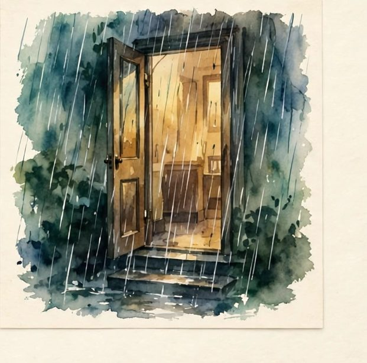
A doorway in sudden rain, warm light inside and the storm unnoticed beyond it.
Noise covers two ways, and this room keeps the second: not the quiet hinge drowned out by the loud one, but the quiet life drowned out by its own famous season. A household survives its great noise — the crisis, the scandal, the war, the windfall — and the story thereafter is told entirely in the noise's terms, as if the years before and after were merely its antechamber and echo. The keeper has read such records with growing unease. Under the famous noise, quietly, the actual texture of the life went on being woven: the ordinary loyalties kept, the work done well at small scale, the child raised in the corridor nobody photographed. The noise covered the substance, and the substance, unrecorded, nearly went out of the record altogether.
The recovery work is slow and unglamorous, which is why it is done in this room before the hall ends. Witnesses are asked different questions — not what happened in the great year, but what a normal week looked like in the year before it. Objects are consulted: the tools worn by use rather than ceremony, the books with broken spines rather than inscriptions. What surfaces is the life that the turning point actually turned — the full floor plan as it stood on the ordinary morning — and the keeper enters it into the record as the hinge's true door, the thing whose weight the fitting actually bore. A door, it turns out, is almost always larger than its famous swinging.
There is a peace available at the end of this work that the louder rooms cannot offer. A person whose story has been recovered from under its noise possesses their past at its true scale: the turn still a turn, honored and dated, but the life around it restored to its own dignity — not a prelude, not an aftermath, a life. The house regards this restoration as the loud hall's real purpose. The noise is kept, the noise is honored, and then the noise is gently set at its correct volume, which is lower than legend and higher than silence. Underneath it, audible again: the whole house, humming at its ordinary pitch, the sound the hinges were fitted into all along.
36After the Slam, the Quiet Inventory
The loud hall ends the way loud seasons end in real houses: not with a cadence but with a quiet that has to be inventoried. After the slam, the letters, the night of everything said — after the weather — the household walks its own corridors with a lamp, counting what is still standing. The keeper calls this the quiet inventory, and it is the loud hall's most important room precisely because no one wants to keep it. The inventory is where the volume stops and the accounting begins: which doors still swing, which were damaged in the noise, which turns out to have been quietly rehung by the storm itself while everyone was watching the lightning.
The inventory's first discovery is always the same, and it is entered in the record without variation across its many cases: less was destroyed than the noise suggested, and more was changed than the household had yet noticed. The slam that dominated the season occupies, in the inventory, a page. The rest of the ledger fills with the season's quieter transactions — the friendship that silently became central, the habit broken by distraction and never resumed, the room of the house abandoned during the crisis and never reoccupied. Time and again, the inventory is where the true hinges of a loud period are actually found: not absent from the season, merely outshouted within it, waiting for a quieter hour to be tested by hand.
So the house institutionalizes the pause. After every loud entry, the ledger leaves a blank page, deliberately unfilled until a season has passed and the lamp has made its round. Visitors find the blank pages frustrating — the record feels unfinished — and the keeper is unmoved. A record finished in the noise is a record of the noise. The blank page is the house's respect for the difference between an event and its consequences, and for the plain fact that consequences need time to reach their doors. The inventory comes. It always comes. The only choice the house offers is whether it is taken calmly, lamp in hand, or later, in the dark, by tripping over what it would have shown.
37The Quiet Turns
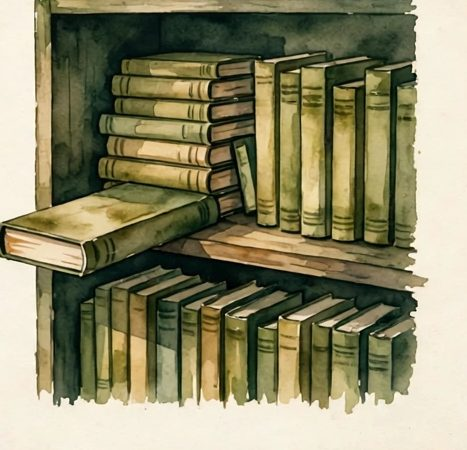
A library shelf with one book pulled out, standing slightly forward of its neighbors.
This hall is the quiet one, and it is the largest in the house, though visitors consistently underestimate it from the doorway. Here are the turns that made no sound: the book taken down, the train taken, the sentence overheard, the habit that became a direction. None of them woke the household. None of them were witnessed in any useful sense, dated in any diary, or suspected by their own keepers for years — some for a lifetime. Yet when the house tests the whole record by hand, hall by hall, the quiet hinges bear a share of the total weight that embarrasses the loud hall's famous machinery. The keeper no longer announces this finding. It is written over the hall's door, in small letters, where the attentive will find it.
The quiet turns share a signature the keeper has learned to read the way sailors read water. They leave no mark at the threshold and a deep mark in the plan. The corridor before them and the corridor after them are made of the same materials — same work, same town, same household voices — but the arrangement has rotated, sometimes by only a few degrees, and a few degrees, compounded across thirty years, is the difference between one coast and another. This is the quiet hall's mathematics, and it explains the hall's size: small rotations are the commonest hinges in the record, and the least likely to be entered without a deliberate search.
The search is what this hall teaches, insofar as the house teaches anything. It is conducted backwards, always: not by scanning the past for important-feeling days, which finds only the loud ones again, but by taking a present arrangement — the trade practiced, the town lived in, the person beside you at breakfast — and walking it back along its own corridor, asking at each door the plain question: what swung here? The answers are almost never dramatic. They are better than dramatic. They are true, and they are yours, and they were quietly holding the whole house up while the story was being told about other doors.
38A Book on the Wrong Shelf
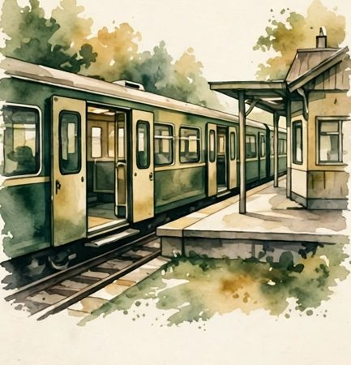
A train standing at a small station, its doors open to an empty platform.
The book was not his, the shelf was not the shelf he meant to be standing at, and the keeper of that library — an institution in another record entirely — had misshelved it, spine out, in the wrong century. He took it down because the title caught at something, read the first page while standing, and sat down on the step stool the way a man sits when a chair has been removed from a room he trusted. The house's copy of this entry is short. The consequences occupy thirty years: a trade changed, a country changed, a shelf of his own built book by book along the wall of a life that, before that winter afternoon, had been pointed in an entirely other direction.
The wrong shelf is the quiet hall's emblem because it concentrates the whole doctrine into one object: significance delivered by misarrangement. Nothing in the event was aimed at its keeper. The book had waited years for its reader without knowing it; the reader had browsed a hundred correct shelves without consequence. The hinge was the conjunction — the right misalignment at the right hour — and the house enters it without attempting to extract a principle anyone could use. There is no principle. One cannot browse wrong shelves professionally. The record merely testifies that the corridor of a life contains misshelvings, and that some of them, tested by hand decades later, are found to be holding doors.
What the keeper does extract, for the audit, is a habit of gentleness toward errors in one's own corridors. The misshelved book was somebody's mistake — a tired assistant, a misread label — and it served a life better than a thousand correct filings. The record of mistakes in any long life is mixed in the same proportions: most are merely mistakes, a few are hinges in disguise, and the difference is knowable only from the far side. The house therefore keeps its errors unweeded, entered plainly, and advises its visitors to do the same. You cannot know which shelf was wrong in the useful way. You can only, looking back, bow to the one that was — and leave the rest of the library, out of a well-earned superstition the keeper refuses to call anything else, respectfully unstraightened.
39The Train Taken Without Thinking
He took the train because the other one was full, or because he misread the board, or because — the versions in the record differ, and the keeper keeps all of them — the platform simply delivered him to that carriage the way a corridor delivers a walker to whichever door is open. Nothing was decided on that platform, and that is the entry's whole importance. By the journey's end there was a conversation finished, an address exchanged, a town seen through a window and filed, inexplicably, under future. The life that followed from that train is documented across three further halls. The decision that produced it cannot be found, because it was never made. The hinge swung on a timetable and a shrug.
The house keeps a special tenderness for the decisions that were never made, because they are the ones the story most wants to revise. Retold, the train is always chosen — chosen for the view, chosen because something drew him, chosen by a self the story has quietly promoted to author. The keeper restores the shrug in every retelling, not from pedantry but from protection. A life whose hinges were unmade decisions is a life that cannot be navigated by formula, and the keeper has watched the formula-seekers suffer on exactly this point. If the great train was an accident of fullness and eyesight, then the lesson is not how to choose trains. The lesson is how much of the house stands on ground no one surveyed — and stands, which is the part worth entering in ink.
None of this makes the unchosen hinge less owned. The conversation in the carriage was conducted, the address was kept, the town was returned to and finally lived in; the corridor after the train was walked on purpose for fifty years. The house draws the line with its usual care: the crossing may be chance, the keeping never is. Visitors auditing their own corridors will find such trains everywhere once they stop requiring their hinges to have been decisions. A seat taken without thinking is still a seat in the record. Check which of yours had a view of a town you ended up living in. The keeper suggests beginning there, and not apologizing for the shrug. The shrug is load-bearing in more houses than this one.
40A Sentence Overheard on a Bus
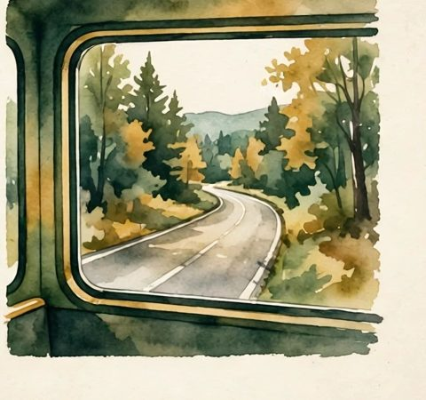
A road seen through a bus window, hedges and gates passing in the rain.
She was not speaking to him; she was speaking to the woman beside her, in the tone people use on buses for matters they consider settled, and the sentence crossed the aisle the way weather crosses a fence. They never check on each other anymore, she said. That is how it goes with brothers. The keeper of the life in question was twenty-six, unconsulted, and holding a bag of shopping on his knees. He had a brother. The sentence, filed in the record exactly as overheard and never improved, did what the sentences in the loud hall did with full ceremony: it rearranged the furniture. He wrote a letter that weekend which, by the ledger's account, had been waiting eleven years to be written.
Overheard hinges are the quiet hall's most delicate instruments, because their speakers never know they were speakers. Somewhere in the record there is a counterpart entry — a woman on a bus, mentioning her brothers to a friend, in a life whose own hinges swung on other sentences entirely. The house keeps the two entries in different halls and never attempts to introduce them. The doctrine is proportion: the sentence's power was never in the speaker, and only partly in the sentence; it was in the hearer, at that age, with that brother, on that route home. The bus supplied the least of it — a seat, a stranger, an unguarded tone — and is honored accordingly, which is to say entered accurately and credited with almost nothing.
For the audit, the overheard hinge leaves the faintest evidence of any in the building: no artifact, no witness who knows they witnessed, often no exact date. The keeper tests it the only way left — by the furniture. Did the letter get written? Did the arrangement of the life actually rotate, and stay rotated? Where it did, the entry stands, sourced to a stranger's voice in transit and believed completely. Where it did not, the sentence joins the weather file, fondly. The hall's benches face the window, in the manner of bus seats, for the remainder of the visit. The keeper recommends the view. A great deal of the record passed exactly like that, at road speed, in the rain, unaddressed.
41The Small Yes
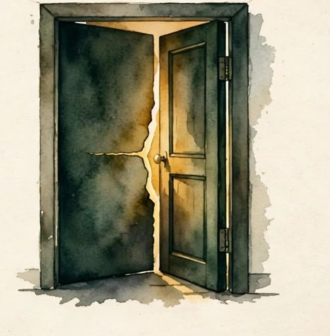
A door opened a crack, a single line of light falling across the hall floor.
The small yes is rarely dressed for history. It is spoken at a kitchen table, or into a telephone, or over a fence, with the kettle still warm and the day's ordinary business unfinished around it. A place offered, a hand extended, an invitation that could easily have waited until tomorrow and somehow did not. The yes fits inside one breath. Yet the keeper, walking the house years later, finds whole corridors arranged behind it — rooms that exist because a door, on one unremarkable afternoon, opened the width of a single unconsidered sentence and never quite closed again.
What makes the small yes a hinge is not its size but its honesty. It was not extracted by ceremony or signed under pressure; it rose out of the day the way weather rises, almost before the speaker had consulted themselves. Later tellings try to give it weight it never carried at the time — a pause, a look, a feeling — but the house keeps the plainer record. The yes was small because the moment was small. The door was large because everything on the other side of it turned out to be.
The keeper advises gratitude of a particular kind here: not astonishment, which fades, but maintenance. A small yes, like any hinge, wants oiling now and then — a remembering of when it was spoken, and to whom, and in what unglamorous light. The house does not ask the keeper to celebrate it annually. It asks only that the turn be entered in the register without inflation, exactly as it happened: one word, lightly said, on which a great deal of the floor plan quietly depends.And the house keeps the overheard sentence the way it keeps every hinge: without varnish, in working order.
42The Almost Invisible No
Some turns are made of nothing happening. An invitation declined so gently that the inviter forgot it by supper; a door not knocked on; a road considered for the length of one evening and then set down without ceremony. The almost invisible no leaves no photograph, no witness, no anniversary. Yet the keeper, testing the hinges of the house, finds this one bearing weight like the rest — for the whole plan of the later rooms assumes a certain door that was never opened, a certain life that was politely, almost privately, refused.
The house is careful with this no, because it is easily misread. It was not fear, though fear may have stood nearby. It was not virtue either, and the keeper is instructed not to polish it into one. It was nearer to a quiet recognition, the kind the body makes before the mind has found its vocabulary: not this, not mine, not now, perhaps not ever. Said aloud, it would have sounded too small for the size of what it decided. So it stayed almost invisible, and decided anyway.Small doors ask nothing of the person who uses them; they keep their size and their silence.
In the register, the keeper enters the no in the same ink as the yeses, because the house owes it the same courtesy. A life is shaped as much by its refusals as by its arrivals, and a refusal kept gentle does not stop being a hinge for being hard to see. Visitors touring the corridor sometimes ask where the great turning points are kept, expecting slammed doors and brass. The keeper shows them, among the others, this quiet one — closed, unmarked, and load-bearing.The keeper enters it in the register as a complete turn, swung once, never swung back.
43A Habit That Became a Direction
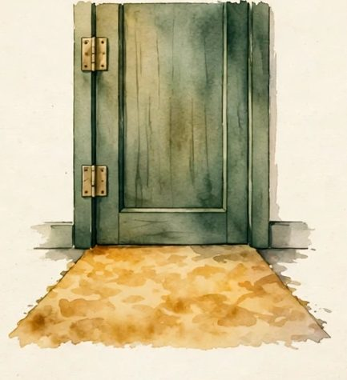
A door closed softly behind the day's habit, the carpet bright before it.
Not every hinge is a sentence. Some are made of repetition: the walk taken every morning until the walk had quietly chosen the neighborhood, the letter written every week until the writing had become a correspondence and the correspondence a life. A habit begins as a door used once for convenience. Used a hundred times, it becomes the door the house is arranged around. The keeper points out that nobody decided this in a single afternoon. The direction accumulated the way carpet wears — honestly, gradually, and mostly beneath notice.
The turn is easy to miss because each individual swing was so small. Tuesday's practice looked exactly like Monday's, and the hinge, tested on any single day, would have seemed barely to move. Only the long view shows the angle changing: a skill acquired almost by accident, a friendship deepened by sheer regularity, a town become home one market day at a time. The house counts such turns among its truest, precisely because no one was performing. What is repeated without audience tends to be what the keeper actually wanted.
There is a maintenance lesson folded into this room. If habits are hinges, then the small daily swing deserves the same respect as the great dramatic one — it will, in the end, move more of the house. The keeper does not preach; the register merely records which doors in every life show the deepest wear, and it is seldom the ceremonial entrance. It is the side door, opened each morning without thought, through which the whole direction of the house was quietly, faithfully, set.In time, the habit stops looking like a habit at all and starts looking like a life.
44The Turn That Took a Season
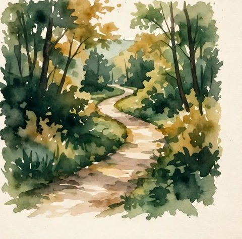
A garden path bending out of sight between tall hedges.
Ask the keeper when this turn happened and the honest answer covers months. Somewhere between the last frost and the first leaves, a mind changed; somewhere across one long summer, a grief loosened or a decision ripened or a love quietly rearranged its furniture. The turn that took a season has no date to circle on a calendar, and the house refuses to invent one for tidiness. A season is its unit, and a season is a perfectly respectable measurement for anything that grows rather than breaks.The house keeps a full shelf of such seasons, each one labeled simply by the year it turned.
The seasonal hinge embarrasses the tidy historian in everyone. We prefer our turning points with timestamps — the letter, the call, the slammed door — because a dated hinge can be pointed to, narrated, even celebrated. But the keeper's register is full of entries that read simply: over that winter. During those months. By the time the garden came back. The door swung at the speed of weather, and the person inside the change often noticed last of all, looking up one evening to find the light entering the room from a different side.
The house therefore keeps two calendars and honors both. There is the calendar of afternoons, for the loud and sudden turns, and the calendar of seasons, for the slow ones — and neither is treated as the junior record. When a visitor insists that nothing in their life ever changed, the keeper does not argue. The keeper asks about seasons instead: what the springs were like, year over year, and whether the same door stood in quite the same place. Usually, somewhere in the answer, a hinge begins to show.
45Nobody Photographed It
The loudest turns in a life often arrive with evidence: letters kept in drawers, tickets, contracts, a photograph of the day everyone dressed up and smiled at the new beginning. But some of the house's heaviest hinges swung in rooms where no evidence was made at all. A conversation on a night bus. A decision reached while washing dishes. A sentence spoken once, to one person, in a kitchen that has since been repainted twice. Nobody photographed it, and so the turn survives only in the one archive that cannot be cross-examined: the keeper's own remembering.
The house is comfortable with this, and suggests the visitor become comfortable too. Proof is a fine thing for courts and landlords; a life is not required to document its hinges to have had them. The absence of a photograph says nothing about the size of what happened in the unphotographed room — some of the most consequential minutes in any biography were spent in dressing gowns, at bus stops, in queues, in all the undocumented postures where a person is entirely themselves and entirely unobserved.What no lens kept, the corridor kept, in the plain custody of the one who was there.
Still, the keeper admits a small tenderness toward these turns, precisely because they are unprotected. A photographed moment has its witnesses; an unphotographed one has only its keeper, and dies when the keeper's memory does unless it is written down or told. That is one reason this house keeps a register at all. Not to certify the turn — the register certifies nothing — but to give the unwitnessed hinge a line of ink somewhere, so that the house's true plan is recorded by the only person who was actually there.
The Hinge Desk
One desk receives all correspondence for this house — questions, corrections, and word of any hinge: the letter, the small yes, the season that turned it slowly, and what the new floor plan feels like to walk. It is read in the order it arrives.
46The Hinge That Made No Sound
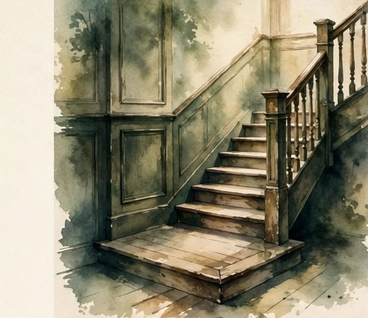
A stair landing where the staircase turns, quiet underfoot.
Every house has at least one hinge that swung in complete silence. No door slammed, no letter arrived, no witness turned their head. A person simply began, from a certain week onward, to live in a slightly different direction — and the silence around the change was so complete that even they dated it wrong for years, assigning the turn to some louder, later event that merely announced what the quiet hinge had already done. The keeper has learned to listen for these precisely because they make no sound to announce themselves.
A silent hinge is usually discovered by its consequences. The keeper notices that a door which used to stick now opens easily onto a different room; that an old errand no longer gets run; that a name, once daily, has gently left the conversation. Tracing backwards, the trail ends at no event at all — only a slow interior weather change, a private sentence thought rather than spoken, a decision made in the passive voice: it was decided. The register records it in pencil, as all such entries are recorded, and without pretending to a date.
The house asks that silent hinges not be treated as lesser hinges. Sound is a property of doors, not of importance, and some of the largest doors in any life are hung so well that they turn without a whisper. The keeper oils them with the same care as the squeaking ones — more care, perhaps, since nobody else will ever notice them. A visitor leaving this room sometimes walks a little more quietly down the corridor, listening, which the house counts as a successful tour.Its door is oiled on the same schedule as the loudest one in the house, and not one week later.
47Quiet Does Not Mean Small
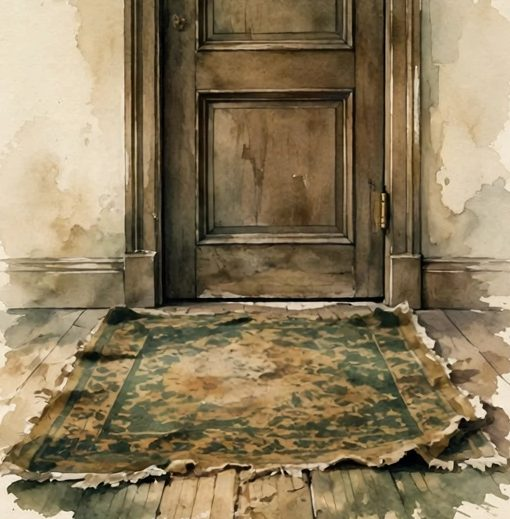
A carpet worn thin in front of one door, its pattern faded by years of turning.
There is a persistent misunderstanding the keeper corrects at this door: that a turning point must be large to be believed. Visitors arrive expecting the great hinges to be the size of castle gates and are quietly disappointed by the actual hardware — a conversation, a book, a five-minute kindness, a refusal so small it fit inside a single word. But the house's arithmetic is different. It does not measure a hinge by its dimensions. It measures by the angle of the door, and by everything that stands on the other side of the swing.
Quiet does not mean small, and the register can prove it from any life the visitor cares to examine honestly. The overheard sentence that rearranged a vocation weighed less, as sound, than the weather that day. The book left on the wrong shelf altered more than most ceremonies. Meanwhile plenty of enormous events — loud, expensive, witnessed by crowds — swung nothing at all, and stand in the record as doors opened onto the same room the keeper started in. Noise and consequence are neighbors in this house, but they are not the same tenant.
So the keeper instructs the eye to adjust. When surveying a life for its turning points, do not look first for the scorch marks and the splintered frames. Look for the wear: the threshold polished by a thousand unnoticed crossings, the handle bright where one particular decision kept being taken hold of. The quiet turns leave exactly that evidence, and it is the most reliable in the house — because nobody polishes a threshold for show. Wear is the signature of the real.The register measures a turn by what moved, never by how much noise the moving made.
48The Keeper Finds Them by the Worn Carpet
Asked how the quiet hinges are ever located, the keeper gives the house's plainest answer: by the worn carpet. A life's true traffic leaves evidence even when its events do not. The corridor shows where the keeper actually walked, year after year — which doors were used at dawn, which thresholds were crossed in worry or in hope, which corner of the house slowly became the center of everything while the formal rooms stood handsome and unused. The carpet, unlike the memory, has no interest in a flattering story.The carpet, read closely, is the house's oldest written record, and the keeper reads it fluently.
This is the keeper's forensic method, and it is a humble one. Where memory polishes the brass and arranges the furniture for guests, wear simply accumulates. The path worn toward a certain door tells of the season a person kept returning to one idea; the unworn carpet before another tells of the grand resolution that was announced to everyone and kept by no one. The keeper reads these signs the way a gardener reads a garden — not for blame, never for blame, but to know where the life has actually been lived.
Visitors sometimes resist this room, preferring their hinges dramatic and their own role in them decisive. The keeper does not press the point. The carpet will still be there at the next visit, patient as all evidence is, and by then another year of crossings will have deepened or corrected its account. In the end the house trusts wear over declaration, because wear is the one record nobody thought to edit. The turning points of a life are where the floor says they are.Guided by it, the keeper walks straight to the turns that mattered and kneels, as it were, to test them.
49Turns Toward, Turns Away
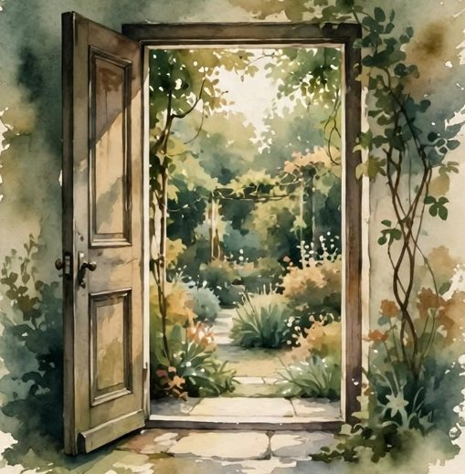
A door walked through, a garden standing open beyond it.
Every hinge in this house swings one of two ways, and the keeper insists the register hold both columns. There are the turns toward: the door opened in welcome, the city moved to, the work begun, the person approached across a room with a heart behaving badly. And there are the turns away: the door closed on a house, a trade, a version of oneself; the road not merely untaken but deliberately left. Popular storytelling honors the first column and apologizes for the second. This house does neither. It records.
The symmetry is the point of the hall. A turn toward something is always, in the same motion, a turn away from something else — the yes carries a hundred quiet noes folded inside it like a letter in an envelope. The keeper who crossed a border toward a new country also turned away from the old street, and both facts belong to the same hinge. To record only the arrival is to file half a document. The house keeps the whole sheet, departures and arrivals in one hand, on the grounds that honesty requires the full swing.
New arrivals at the desk are often surprised to find their leavings entered without a single mark against them. They had expected the away column to read like a confession. Instead it reads like a timetable: plain, dated, factual, some entries sad and some relieved and many both at once, in proportions only the keeper of that life can state. Both directions are recorded because both directions were lived. The house turns on its hinges either way, and a hinge, the keeper notes, has never once asked which way it ought to swing.
50The Door You Walked Through
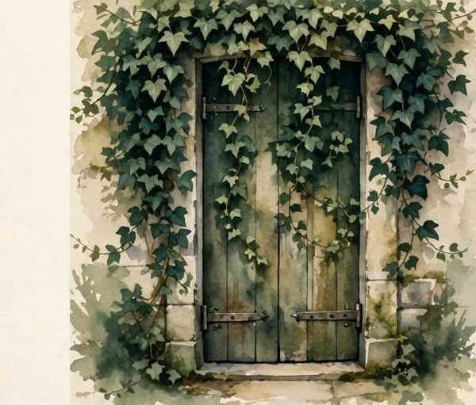
A door standing closed and ivy-covered, passed by daily on the corridor's round.
Of all the doors in the house, this is the one the keeper can describe in the most detail: its weight, its weather side, the exact resistance of its handle on the first morning it was ever pushed. The door you walked through is the hinge with a witness — yourself, on the threshold, aware at least of the crossing if not of everything it would mean. Later rooms all lead back to it. Whole corridors of a life make sense only once this door is admitted into the story and given its true position in the plan.
Walking through is an act with a body in it, and the house honors that. Whatever else the turn involved — luck, timing, other people's doors opening in sequence — there was a moment when the keeper's own feet carried the keeper across, and that moment cannot be reassigned to circumstance without lying about the record. The register enters it plainly: on this day, in this weather, the door was walked through. Not pushed by fate, not blown open by the times. Walked through, by the person whose house this is.
And yet the keeper is tender about the door's other side, because every walked-through door is also a door closed behind. The garden beyond it was real, and so was the room left standing empty, keeping its light for no one. The house does not ask the keeper to regret the crossing; the crossing was the life. It asks only that both rooms stay on the plan — the one entered and the one exited — drawn in the same ink, neither exaggerated, neither erased. That is what it means, in this house, to have gone through a door honestly.
51The Door You Walked Past
Not every hinge swings. Some of the most consequential doors in a life are the ones walked past — noticed, considered, perhaps even touched once by a passing hand, and then left closed while the corridor continued. The keeper keeps these doors on the plan with the same care as the opened ones, because a walked-past door is still a decision, and often the more deliberate of the two. Anyone can be pulled through a doorway by circumstance. Walking past, eyes open, is an act of authorship that nobody applauds and the keeper must record alone.
The reasons entered in the register are various and mostly honorable. The door was wrong for the season. It was right, but its price was a room the keeper was unwilling to leave. It promised much and was believed, and still declined, on evidence no committee would have accepted and the keeper trusted completely. Later, of course, the walked-past door acquires a glow in the retelling — all closed doors do. The house corrects for this gently: it notes what was actually known on the day of passing, which was less than is remembered now.
There is no verdict in this room, in either direction. Some walked-past doors were mercies; some were the great missed chances of the biography, and a few were both, depending on the decade from which they are viewed. The keeper's rule is only that they be kept — neither converted into regrets to be visited weekly nor repainted as lucky escapes. A door walked past is a fact of the floor plan. The corridor went the way it went, and this was one of the places it could have turned and, on reflection and on the record, did not.
52Leaving Is Also a Hinge
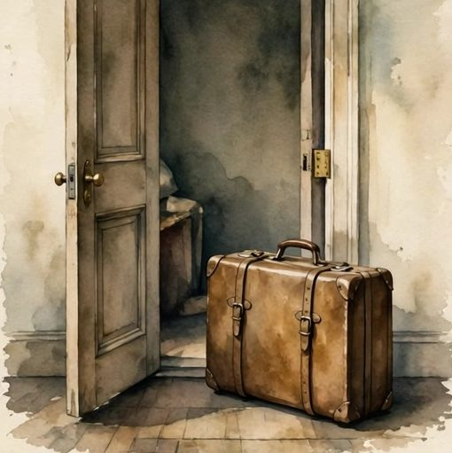
A suitcase standing ready by an open door, the room behind it already quiet.
Arrivals get the ceremonies; departures get the register's plainest handwriting — and yet this house maintains that leaving is also a hinge, fully weighted, as consequential as any door ever entered. To leave a city, a marriage, a trade, a country, a version of oneself: these are swings of the whole door, not footnotes to somebody else's story. The keeper has noticed that the leavers themselves are often the last to claim the turn, as if the hinge belonged to those who stayed. It did not. It belonged, and belongs, to the one who walked.
A leaving is misread when it is told only as an ending. On the day itself it was also a piece of information carried forward: this much I know about what I cannot keep doing. The suitcase by the door is not an accusation against the room behind it; rooms, like people, can be entirely decent and still be the wrong room. The house records leavings without defendants. No one is charged in these entries. A door swung, a household rearranged itself around the draught, and the corridor on both sides of the threshold was changed by the same weather.
The keeper does add one maintenance note for this hinge, because it rusts in a particular way. A leaving that is never spoken of honestly — trimmed into either a triumph or a wound for the comfort of listeners — begins to stiffen, and the keeper finds the whole house harder to walk. Told plainly, dated plainly, grieved or celebrated in its true proportions, the same hinge swings freely for decades. Leaving was a turn. The register's only request is that it be allowed to remain one.The corridor you left is still on the plan; the house simply keeps its door on the latch now.
53A Border Crossed Once
A milestone standing on an empty road at dawn, the border country quiet around it.
A border crossed once has a strange property in the register: it cannot be uncrossed, even by returning. The keeper who went back — and many do, suitcases in both directions across a life — found the old country in place and themselves altered in the carrying. The crossing is entered as a hinge not because the line on the ground was sacred, but because something in the crosser was stamped along with the documents. After it, every map in the house quietly includes two countries, whether or not the keeper ever lives in both again.
The house is careful about the scale of this room. A border may be a nation's line, with its booths and barriers, or it may be a river, a language, the threshold of a profession, the far side of an illness survived — any line after which the same person is, in some entry of the record, a resident of elsewhere. What matters is the once-ness of it. Some doors in a life can be swung a hundred times and stay furniture. A border crossed once changes the plan of the whole house permanently, and the keeper's directions home are never again written in only one geography.
Visitors who have made such a crossing tend to stay longest in this room, saying little. The keeper lets them. There is a recognition that passes between those who have stood at a milestone at dawn with everything they owned making a small pile on the ground: the pile was small, and it was everything, and both of those facts stayed true for years. The register honors the proportion. It does not dramatize the crossing, and it does not minimize it. Once is recorded as once — the loneliest, bravest number in the house.
54The Job Taken, the Job Refused
Somewhere in every biography stand two adjacent doors with the same paint: the job taken and the job refused, often arising from the very same week of a life, sometimes from the very same afternoon of letters. The keeper is asked about them more than about any other pair in the house, because work is where most lives spend their daylight, and a hinge there swings a great deal of furniture. The taken door gets the biography. The refused one gets a paragraph, if it is lucky. This house gives them a room together and equal ink.
The taken job is easy to narrate: it has colleagues, addresses, a pension of anecdotes. The refused job has none of these, and yet it shaped the taken one's meaning — for the keeper chose, and choosing is what turns an accident into a direction. Examined honestly, the refusal was rarely about the work itself. It was about a city not moved to, a self not become, a price in mornings and evenings that the keeper counted on the threshold and declined to pay. The register records the arithmetic without auditing it. The keeper was there; the committee was not.
What the room will not do is declare a winner. The taken job built one house; the refused one guards the ghost of another, and both houses have weather. There are keepers who grieve the refusal at sixty and others who bless it at the same age, and the difference, the register notes, owes less to the doors than to the decades. The pair stands in the corridor as the house's emblem of working life: two doors, one corridor, a person in the middle with a key ring, doing the ordinary, irreversible mathematics of a Tuesday.
55A Change Is Not Automatically an Improvement
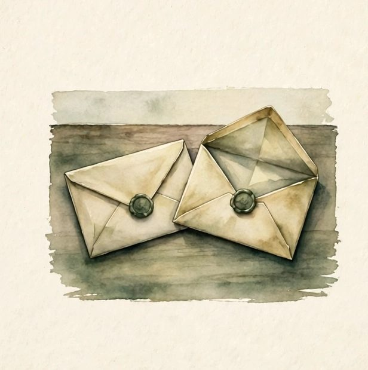
Two envelopes resting on a desk, one of them opened, the other's seal unbroken.
This room exists to correct the house's most persistent compliment. Visitors, touring the corridor of turns, like to say that every change was for the best, and they say it kindly, the way one compliments a garden. The keeper accepts the kindness and declines the claim. A change is a change: measurable, dated, real. An improvement is a further judgment, requiring further evidence, and the two are not the same entry in any honest register. Doors in this house swing toward and away. The plan records both swings in identical ink, and lets the keeper do the judging, slowly, over years.
The correction matters because forced optimism is a kind of debt. If every turn must be called an improvement, then every keeper with a turn they cannot praise is left holding a grief that the house refuses to file — and unfiled griefs do not disappear; they simply take up squatting in the corridor and trip the rounds at night. Far better the register's plain method: the door swung; the house rearranged; some rooms gained light and some lost it. A keeper is allowed to say exactly that, in exactly those words, and have it count as the complete record.
None of this darkens the house; it steadies it. A keeper permitted to call a change merely a change is also freed to recognize the genuine improvements when they come, and to praise them without discounting the praise. The register's scale is honest in both pans. So the two envelopes rest on the desk of this room, one opened and one not, their contents unjudged by the furniture around them — a change delivered by post, awaiting the keeper's own slow verdict, which is the only one this house has ever recognized.
56Some Turns Are Mourned, Plainly
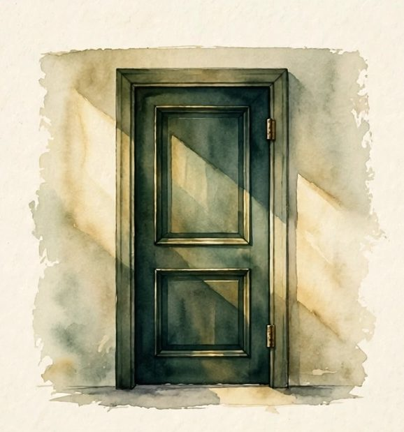
A door with light falling on both sides of it, neither room asking to be the brighter.
Some turns in the register are followed by a short entry in the keeper's own hand, and the house has learned to read the shortness correctly. The door swung; the room beyond it was not the room that had been hoped for; what was lost in the crossing stayed lost. No analysis follows, because none was invited. The turn is mourned, plainly — the way weather is mourned after a harvest, without speeches, in the course of ordinary work. The house counts this plainness as a form of accuracy. Not every hinge in a life is a lesson wearing a disguise.
Plain mourning has its own etiquette, and the keeper observes it strictly. The lost thing is named as it was, not diminished to make the naming easier and not enlarged to make the grief impressive. The door is neither cursed nor blessed; it is a door, it swung, and some of what stood on its far side belonged to the keeper and does not anymore. Anniversaries of such turns are kept quietly in this house, if they are kept at all — a pause on the rounds at the right threshold, a moment's standing still, and then the corridor again.
What surprises visitors is that the room is not the darkest in the hall. A turn mourned plainly tends to finish its mourning in a way that decorated grief cannot, because nothing is being performed and therefore nothing has to be maintained. The keeper returns to the corridor; the house continues; the hinge is oiled like the others when its season comes round. The register's philosophy fits in one line, which the keeper applies to every sad entry without exception: it happened, it mattered, it is over being argued with, and it is carried.
57No Silver Lining Is Owed
Well-meaning visitors bring them by the armful: the consoling interpretation, the hidden gift, the reason it all worked out. The keeper receives these gifts the way one receives flowers for a house that has asked for none — politely, and without putting them in water. This house's rule stands over the door of the room and admits no exceptions: no silver lining is owed. Not by the turn, not by the keeper, not by the visitor determined to extract one before tea. A loss is permitted to remain a loss for as long as the record says it was one.
The rule is not bitterness; it is bookkeeping. A silver lining, demanded too early or too cheerfully, functions in the register like a false entry — it balances the page by falsifying it, and every later calculation inherits the error. The keeper who is allowed to leave the loss unlined keeps an honest set of books, and honest books, in this house, are what eventually allow genuine consolation to be recognized when it finally arrives under its own name, in its own season, owing nothing to anybody's deadline for cheerfulness.
And when a lining does appear — as, across enough years, linings sometimes honestly do — the house records it in a different column and a later hand. It is entered as something found, not something owed, which preserves both facts at once: the grief was real, and so was the eventual, unexpected mercy. What the rule protects is the order of events. First the turn, then the truth about the turn, and only much later, if at all, the gleam. The keeper has never yet seen the gleam arrive on schedule for being demanded.
58Gratitude and Grief Can Share a Doorway
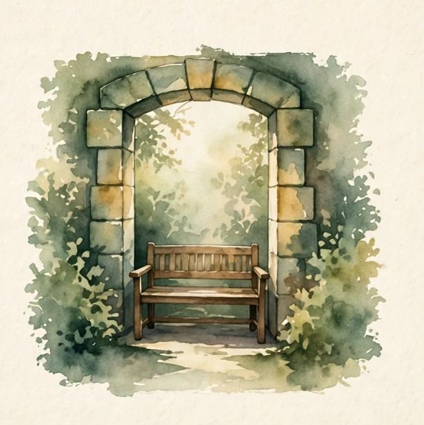
A bench set in a doorway where two can sit, the light shared between the rooms.
The bench in this doorway was built, by some earlier keeper, to a width of exactly two, and the house has kept the measurement ever since because it states the room's whole doctrine. Gratitude and grief are not opponents competing for the threshold of a life. They are two occupants of it, frequently at the same hour, and the doorway is wide enough — the doorway of any honest turn is wide enough — for both to sit down. The keeper has stopped trying to evict either one for the comfort of the other, and the house runs better for the surrender.
The pairing is most visible at the great hinges. The move that saved a life also ended a world; the departure that grieved everyone also set the keeper free; the door walked through in joy was, from the other side of the corridor, a door closed in someone else's face. Retellings prefer to choose, and call the choosing honesty. This house calls it abbreviation. The register takes the longer entry: thanks, recorded in full; grief, recorded in full; the two columns ruled down the same page, neither permitted to edit the other into smaller type.
New keepers sometimes ask whether the sharing ever resolves — whether one of the two, given enough seasons, finally takes the whole bench. The keeper's answer is that resolution is the wrong ambition for a doorway. What the years actually bring is fluency: the two learn each other's hours, arrive without startling the keeper, and leave the bench in better order than they found it. The turn stays what it was. The keeper becomes what the keeper became by letting both of its truths keep their seats.The house makes room at its thresholds for exactly this kind of double occupancy, and always has.
59The Turn Was Still Yours to Make
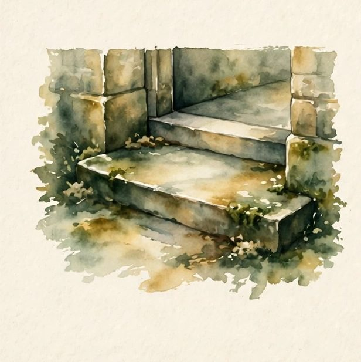
A threshold stone polished by feet, worn deepest where the choosing was done.
After so many rooms of weather — other hands, other doors, timing, luck — the house arrives at a sentence it underlines. Whatever the turn was, and whoever else was holding doors that day, there came a point in it where the choice stood in front of the keeper and nobody else. The job was accepted or declined in one person's voice. The border was crossed on one person's papers. The yes, the no, the leaving, the staying: each passed, at the decisive inch, through a single pair of hands. The turn was still yours to make, and — the register insists on the tense — it was made.
The sentence is not an accusation, and the house refuses to hear it used as one. Circumstance is real; the corridor is full of doors opened by other hands, and several rooms of this hall honor them properly. But between the weather and the swing there remains the keeper's own small, irreducible share, and a house that files it away entirely has begun to lie about its plan. The keeper's share may be one inch of the door's whole arc. It is still the inch that the rest of the arc turned on, and it belongs on the record.
There is a steadiness available in this room that visitors sometimes mistake for pride. It is simpler than pride. A keeper who knows which inch of the turn was theirs can maintain exactly that inch — oil it, learn from its creaks, forgive it where forgiveness is due — while letting the weather be the weather. The alternative, a house where everything was done by forces, is a house with no hinges at all, only draughts. This house has hinges. The keeper's initials are on several. That is not the whole story, and the register never says it is. It is the load-bearing part.
60Both Directions Are Recorded
The hall closes where the keeper's desk stands, and on the desk the register lies open at the page this whole wing has been describing. Two columns run down it, toward and away, entered in the same ink and the same unhurried hand. No column is headed with a star. No entry has been summarized into a moral in the margin. It is, the keeper will admit, an undramatic document — and that is its entire claim on the visitor's trust. A life's turns, recorded at their true size, need no assistance from the furniture.
Both directions are recorded because both directions were required. The house the visitor has just walked through — its rooms arranged as they are and no other way — is the sum not of the arrivals alone but of the leavings, refusals, crossings and returns, each swinging its door on its hinge and each leaving the corridor permanently altered. Strike the away column from the record and the plan stops explaining the house. Keep both, and the plan explains everything except the one thing no plan explains, which is why the keeper is fond of it. Fondness, the register notes, is also an entry.
The keeper closes the book at the end of the rounds and leaves it on the desk for the next keeper of the house, whoever and whenever that may be. Its final instruction is the shortest in this hall: when your own turns come — and they will come quietly, most of them, on ordinary days — write them down in both columns, at their actual size, in your actual hand. The house will do the rest. It has been doing the rest, hinge by hinge and year by year, since the first door ever swung in it.
The Hinge Desk
One desk receives all correspondence for this house — questions, corrections, and word of any hinge: the letter, the small yes, the season that turned it slowly, and what the new floor plan feels like to walk. It is read in the order it arrives.
61What If
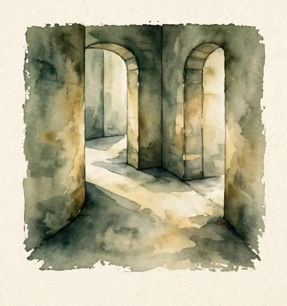
A corridor forking into two even passages at a quiet bend in the hall.
Every house kept honestly has, somewhere along its corridor, a door that was never opened — or opened once, briefly, and closed again without a sound. Behind it runs the other corridor: the life assembled from the choices not taken, furnished with the rooms that were planned and never built. This hall belongs to that corridor. The house does not pretend it is not there, because pretending has never once removed a door; it only makes the keeper walk past it faster, with eyes lowered, which is its own kind of haunting. Better to give the what-if its measured hour of attention, in daylight, with the latch oiled and the visit kept short.
The question behind the door is always the same, and it arrives in a particular tone: courteous, reasonable, and completely unwilling to leave. What if the letter had been answered. What if the train had been missed, or caught. What if the sentence had been said aloud instead of swallowed, the offer accepted, the city chosen, the hand taken. The keeper has heard them all, at three in the morning and at the washing up, and has learned that the questions are not enemies. They are the house's way of remembering that it was built by choosing, and that choosing, done honestly, always leaves a corridor standing in the dark.
So this hall is kept swept, the way a landing is kept swept: not because anyone lives on it, but because it is part of the house and deserves its share of the rounds. The keeper comes here deliberately, at appointed times, the way one visits a grave or an old street — with respect, with a finite errand, and with a life waiting back in the lit rooms. What happens in this hall, over the next twelve rooms, is a weighing and a thanking and, at the end of it, a closing. The what-if will be heard in full. It will not be handed the keys.
62The Other Corridor
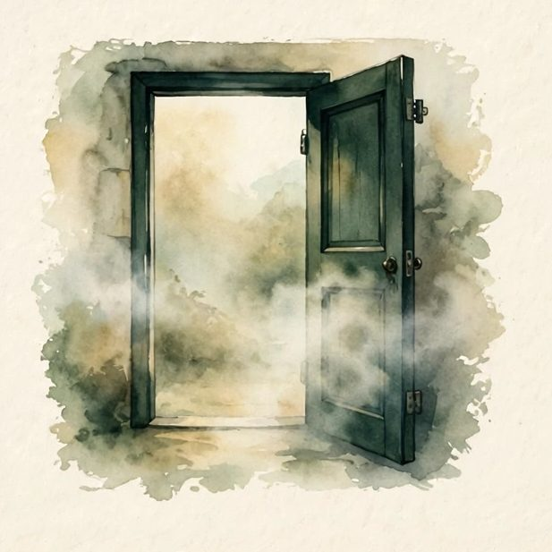
A door opening onto mist, the passage beyond it white and unreadable.
The other corridor is not a fantasy, exactly, and the house is careful about the word. A fantasy is invented from nothing; the other corridor was genuinely built, plank by plank, out of real offers and real afternoons, and then left unfinished at the moment of choosing. It has the job in the other city half accepted, the friendship one telephone call from being a marriage, the house with the blue door that was viewed twice and thought about for a year. Everything in it is load-bearing and almost true, which is precisely why it creaks so persuasively when the keeper walks the real corridor at night.
It is tidier than the real corridor, and this should be counted against it. The other corridor never had to survive weather: no illnesses in it, no debts, no dull decades, no one growing ordinary inside it. Its rooms are lit by the light of the afternoon the choice was made, held permanently at that hour. The keeper, visiting, notices the skirting boards are perfect and the radiators cold, and understands that the corridor's famous peace is the peace of a place where nothing has ever actually had to be lived. It is a corridor of beginnings, preserved. Beginnings are charming. They are not the same as lives.
Nobody lives in the other corridor, and that, in the end, is its mercy as well as its sadness. No one in it has grown older or kinder or more tired; the versions of other people kept there are preserved at the age of the parting, still saying the thing they said on the platform. The keeper walks its length seldom and in daylight, greeting the rooms without entering them, the way one passes the houses of a street one used to live on. Then the door is reached, and the real corridor — scuffed, weathered, inhabited — is waiting with its lamps on.
63The Life Not Lived Is Furniture, Not a Room
Here is the house's ruling on the life not lived, and it is a ruling about furniture. The unlived life exists; the house does not deal in denial. It can be pointed to, inventoried, even admired — the career arranged differently, the country stayed in, the person not left. But it belongs to the category of furniture, not of rooms. Furniture is what a life contains; a room is what a life is lived in. The distinction sounds small and is not. Furniture can be dusted, moved, and eventually carried out. A room makes claims: on heating, on mornings, on the whole architecture around it.
The error this hall guards against is the quiet promotion of the furniture into a room — the moment the keeper stops dusting the unlived life and starts, in imagination, sleeping in it. It happens gradually. First the visits lengthen. Then a kettle is mentally installed, then opinions about the curtains. Presently the real corridor suffers by comparison, because a furnished what-if never has a boiler break down in it, and the keeper is found standing in their own kitchen feeling homesick for a house that was never built. The house is gentle about this. It also, in the end, insists on the demotion.
None of this makes the furniture worthless, and the house would not have it carried out to the street. A life's what-ifs are made of the same timber as its certainties, and some of them are beautiful pieces: the almost-vocation, kept polished; the almost-city, visited in dreams with genuine affection. Kept as furniture, they enrich the corridor they stand in — a chair by the door for a guest called Might Have Been, sat in briefly, talked with honestly. The ruling is only about category. Admire the chair. Sit in it when you visit the hall. Sleep in your own bed, in the room with your name on the plan.
64Visit the What-If; Do Not Move In
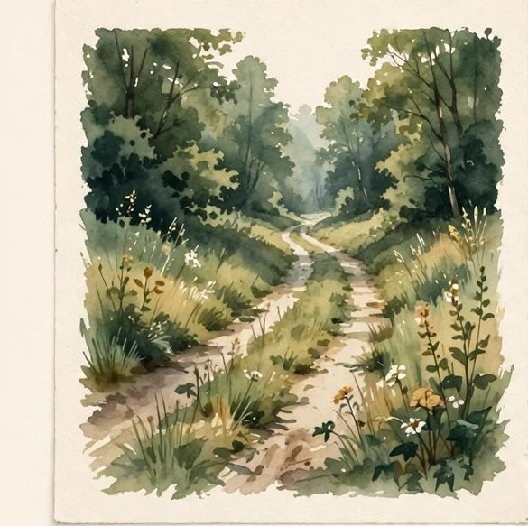
A road not taken, grass growing over its middle, walked only in visits.
The house permits the visit. It would be a poor sort of honesty that forbade the keeper from ever standing in the other corridor, and a poorer one that pretended the door was not there. What the house regulates is the manner of visiting, and its rules are the rules of any good guest. Come in daylight, when the rooms show their true size. Come with a purpose — a question to settle, a debt of attention to pay, a face to look at once more with adult eyes. And come with a leaving time already decided, the way a sensible guest arrives at a beloved house with the return ticket already in the pocket.
Moving in, by contrast, is never announced; it accumulates. A drawer of grievances is installed first, then comparisons begin to be made at breakfast, in the real kitchen, against a household that has no breakfast to spoil. The unlived life starts receiving mail. The keeper catches themselves rehearsing — not remembering, rehearsing — improved versions of old scenes, with better lines, delivered to an audience of one ghost. None of this is wicked. All of it is expensive. Rent paid to the other corridor is taken, coin by coin, out of the only corridor where the kettle is real and the letters actually arrive.
A visit done well ends the way all good visits end: with thanks, and a door closed by a hand that is not shaking. The keeper thanks the what-if for what it genuinely holds — evidence of having been wanted by life in more than one direction, proof that the choosing was real choosing. Then the corridor is left as it was found, the chair straightened, the lamp turned down. Nothing needs to be renounced in anger for the leaving to count. The house distrusts dramatic farewells to the unlived life; they tend to be deliveries of forwarding addresses. A quiet latch is the whole ceremony required.
65The Road Not Taken Kept Its Weather
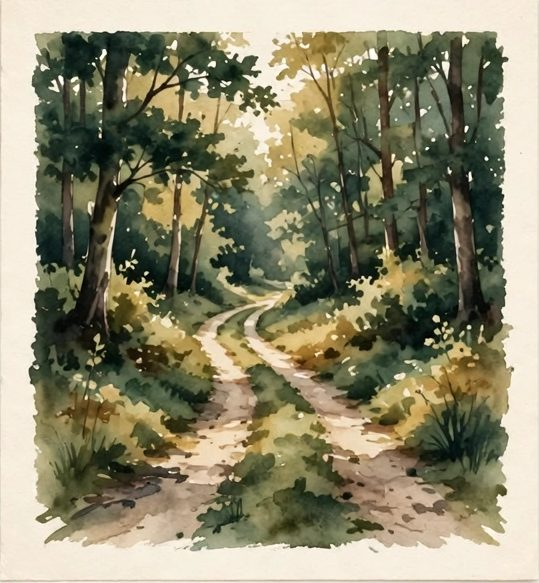
Two paths through one wood, each under its own weather.
The road not taken did not hold still in perpetual sunshine, waiting to be regretted accurately. It kept its weather. In the years since the fork, that road has had its own rains and its own long droughts, its fallen trees and washed-out bridges, its seasons when the surface was impassable and seasons when it froze hard enough to skate on. The keeper knows none of the details, and this ignorance is the honest core of the matter: the regret we carry is almost always regret for the road as it looked on one morning, from one fork, in one light, remembered across decades that actually happened on the other one.
It also kept its tolls. Somewhere down that road stand the versions of trouble the keeper never had to meet: the employer who would have been a tyrant, the winter that would have found the roof wanting, the love that would have asked for a smaller self and received it. And somewhere down it, too, are plain losses no imagination reaches — people who would have died on that road's schedule instead of this one's, kindnesses that would never have occurred because the keeper was elsewhere being rained on. The two roads are not a prize and a punishment. They are two weathers, and only one of them was ever going to be walked in.
This is why the house teaches a particular courtesy toward the untaken road: speak of its weather as unknown, because it is. The keeper who says the other road would certainly have been golden is inventing; the keeper who says it would certainly have been ruin is inventing in a darker ink, usually to make the present bearable. Both inventions steal from the same till. What can be said honestly is narrower and, the keeper finds, strangely restful: that road kept its weather, some of it would have fallen on me, and I was spared nothing and denied nothing — I was simply rained on elsewhere.
66Counterfactuals, Weighed Fairly
To weigh a counterfactual fairly, the house keeps a pair of scales on the desk of this hall, and its rule for them is simple: both pans, both lives, both columns. Most private weighing is quietly rigged. The other life is credited with everything it might have gained and charged with nothing it would have cost, while the lived life is charged with every documented sorrow and credited with none of its ordinary mercies — the friend made only on this road, the self built only by this weather. Under that arithmetic the what-if wins every time, which is how the keeper knows the scales, and not the life, are what need adjusting.
Fairness is also owed to the chooser, who is usually weighed with evidence they never had. The keeper at the fork did not possess the sequel; they possessed a morning, a mood, a bank balance, an ache, and the best map that could be drawn at that age by that light. It is a cheap trick of hindsight to grade the decision with the atlas of everything that happened afterward, as if the road signs had been legible in advance. Weighed fairly, most choices come out neither brilliant nor shameful. They come out human: made in partial light, by a person doing arithmetic with half the figures still missing.
Weighed fairly, the counterfactual changes size. It stops being a paradise withheld or a disaster narrowly missed and becomes what it always was: an alternative, with its own weather and its own bills, standing beside the life that got lived. The keeper notices the change physically, the way one notices a room after furniture has been put back in proportion — there is floor again, and air. Nothing has been argued away. The other life has not been insulted, only measured. And measurement, the house maintains, is a form of respect: it is the difference between honoring a road and being haunted by a mirage of one.
67The Other Life Would Have Had Other Losses
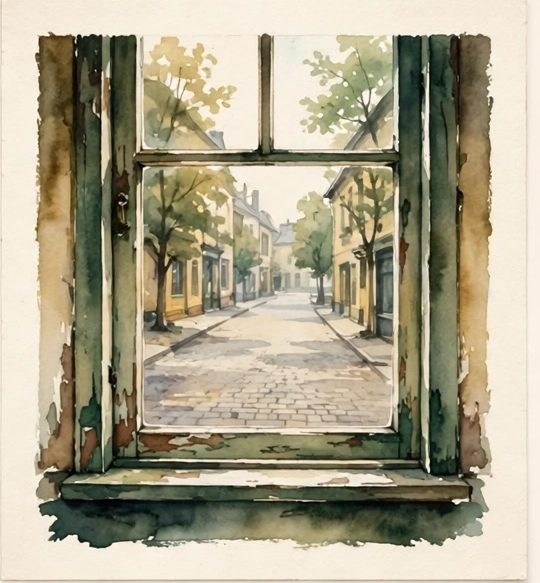
A window looking onto a street never walked, its lamps lit for other people.
The other life is usually imagined as a corrected draft of this one: the same keeper, the same decades, with the losses struck out and the prizes left in. The house declines to keep so dishonest a ledger. The other life would not have been this life minus its sorrows. It would have been another life entire, with another set of graves in it. The father dies on both roads, perhaps — but the last conversation happens differently, or not at all. The illness that arrived here in March arrives there in a crueler month, or arrives as a different name, or takes a different member of the household to visit.
There is a harder entry in the same ledger, and the keeper reads it without flinching. The people this road provided — the friend met by accident in the wrong city, the colleague who became family, the stranger on the train who said the sentence that reorganized everything — do not exist on the other road, or exist unwalked-past. The other life's losses include every person the lived life gained. This is not a trick for manufacturing gratitude; the house forbids that arithmetic elsewhere. It is simply the full bill, presented as the full bill is presented anywhere: so that the keeper stops paying for a fantasy of losslessness that no road has ever offered anyone.
So the house mourns accurately, which is a rarer discipline than it sounds. This life's losses are real losses, and they keep their full weight; nothing in this hall asks the keeper to set them down. The other life's losses are hypothetical in detail and certain in kind, and they keep their weight too, in the other pan of the scales. Held together, the two truths do something neither does alone: they end the suspicion that somewhere, just past the fork, stood the version of events in which nothing precious was ever lost. There was no such version. There were only roads, each with weather, each with graves, each with lamps.
68Imagining Is Not Ingratitude
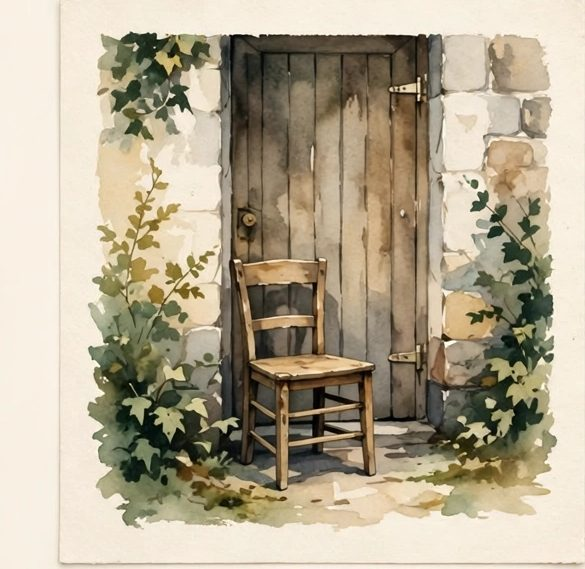
A chair placed before a closed door, set there for visiting and nothing more.
Keepers often arrive at this hall apologizing, as if the visit itself were a small treason — against the spouse chosen, the city chosen, the life that shows up every morning expecting loyalty. The house receives the apology and declines it. Imagining is not ingratitude. A mind that can choose can picture the unchosen; that is not a flaw in the machinery, it is the machinery, still warm from the original act of deciding. The farmer who wonders about the sea has not insulted his field. The sailor reading about farms in a harbor town has not mutinied. Each is only checking the map against the whole coastline.
Gratitude, in the house's accounting, is not measured by the absence of other pictures. It is measured by conduct in the corridor actually inhabited: the lamps lit, the hinges oiled, the people in the real rooms attended to while they are still in them. A keeper can stand at the what-if door every week for years and be, by that accounting, deeply grateful — provided the rest of the rounds are walked. The true ingratitude the house knows is quieter and has nothing to do with imagining: it is the neglect of the chosen life while sulking at the unchosen one, the dinner let go cold while staring at a door.
Nor do the people of the chosen corridor need protection from the keeper's imagination, as if love were a candle that any draft of curiosity could blow out. Partners who have shared decades understand, usually without a word being exchanged, that both houses have their what-if doors and that both keepers visit them. It is one of the mercies of a long tenancy: the visits stop requiring confessions. What requires honesty is only the conduct — where the keeper sleeps, eats, keeps promises, grows old. By that measure the imagination is innocent, and the house records it, in the ledger of this hall, under weather: noted, seasonal, and nobody's fault.
69The What-If Gets One Hall, Not the House
Proportion is this hall's whole argument, and the house states it in architecture: the what-if is given one hall of the ten, twelve rooms of the hundred and twenty, a generous and definite allotment. It is not given the entrance, the staircase, or the kitchen. Keepers in trouble on this point can usually be read by floor plan: the unlived life has annexed the front of the house, and the lived one is being conducted from a back room, apologetically, with the good rooms kept for a household that never arrives. The remedy is not demolition. It is rezoning — the same furniture, respectfully returned to its hall.
One hall, the house points out, is not a small concession. Twelve rooms is more space than most keepers give their actual memories; whole decades of the lived life are stored in less. The what-if is not being insulted by its allotment — it is being housed at the scale its nature warrants, the scale of a guest wing rather than a residence. Guests are honored in this house. They are fed, heard, given the good chair and the long evening. What they are not given is the deed. The distinction between a guest wing and a deed is the distinction this entire hall exists to keep swept and legible.
Occasionally a keeper petitions to enlarge the hall, and the house considers the petition with its usual courtesy before declining it. Enlargement, experience shows, is never the real request. The real request is that the lived halls feel too quiet by comparison — and the cure for quiet halls is not a bigger what-if but better lamps in the actual rooms, company actually invited, work actually resumed. The hall stays its size. Its door, however, is never locked from the outside, and its twelve rooms are kept in good repair, because a house that starves its guest wing ends up haunted, and a house that feeds it the whole estate ends up empty.
70Mercy for the Chooser
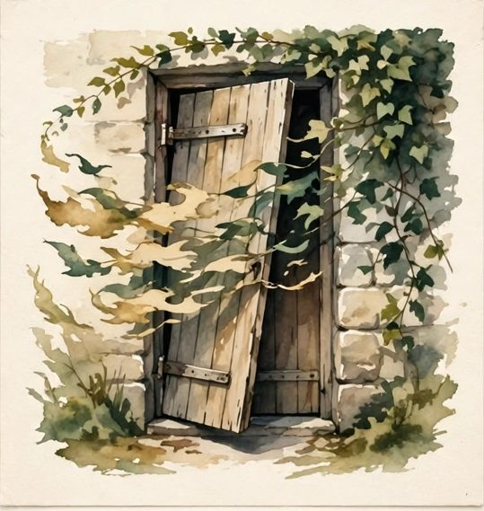
A door being closed gently by the wind, the latch falling soft.
At the end of the weighing, this hall performs its kindest office: mercy for the chooser. The chooser, in most houses, is the one resident never forgiven — that younger keeper at the fork, with their limited map and their loud heart, whose signature is on every door in the building. They are cross-examined for decades by a prosecutor who knows all the outcomes. The house retires the prosecutor. The chooser did not betray the keeper; the chooser was the keeper, earlier and with less light, and a house at war with its own earlier tenants is a house whose corridor echoes at every hour.
Mercy here is not amnesia, and it is not a verdict of flawless. Some choices in the register were poor ones — made carelessly, or in fear dressed as prudence, or against counsel that deserved better. The house names them poor, in plain pencil, and then declines the next step, which is contempt. Contempt is a luxury good with no function: it does not improve the past, instruct the present, or oil a single hinge. What mercy instructs is the future chooser, who is listening from further down the corridor and deciding, right now, how frightened to be of the next fork.
So the chooser is given a chair in this hall, and a decent one — not the stool by the door reserved for defendants. The keeper, at the end of a fair weighing, can say the sentence the whole hall was built to make sayable: I chose with what I had, the road kept its weather, and I am done billing the young for the climate of the old. It is usually a quiet moment. Sometimes the corridor itself seems to settle, the way houses do when a long-standing draught is finally found — not at the what-if door at all, but at the one between the keeper and the chooser.
71Close the What-If Door Gently
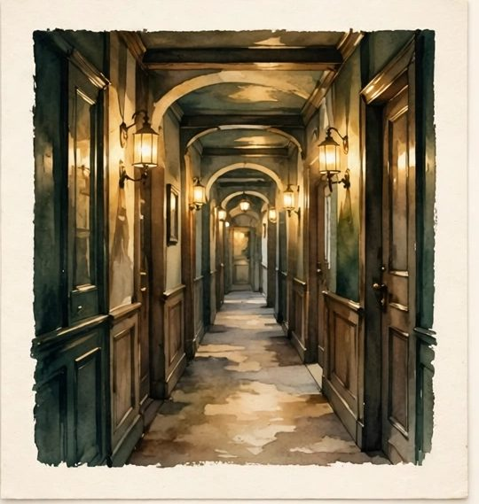
The chosen corridor behind the closing door, its lamps lit along the wall.
The hall ends, as it was always going to, at the door. Closing it is the keeper's last act here, and the house is particular about the manner: gently. A slammed what-if door is only a loud hinge by another name, and it advertises, to the whole corridor, exactly how much force the unlived life still commands. A gentle close says something else entirely. It says the visit happened, the weighing was fair, the thanks were real — and that the keeper is leaving under their own power, unhurried, the way a guest leaves a house they expect to be welcomed back to, someday, briefly.
Gently, also, because of what is being closed in. Behind the door stands no monster and no treasure vault — only a younger keeper's hopes, laid out like furniture under sheets, and hopes deserve a door closed the way one closes the door of a room where someone is sleeping. The unlived life will keep. It does not need the keeper's anger to preserve it, nor their worship. It needs exactly what the chosen life needs and gets: to be entered in the register accurately, in pencil, without exclamation. Then the latch. The latch is not a lock; the house notes the difference carefully, every single time.
What the keeper finds, the first time the door is closed gently and on purpose, is that the chosen corridor has quietly grown. Nothing in it has changed — same doors, same worn carpet, same view from the landing — but it is no longer being measured against a lit stage set down the hall. The house does not promise this feeling will hold forever. The door will be visited again; the hall exists, and its twelve rooms are patient. But each gentle closing costs less than the one before, the way every honest repetition costs less, until the gesture is just a gesture: a hand, a latch, a life resumed.
72The Chosen Corridor Is the Address
An address is not where a person dreams of living; it is where their life is delivered. The chosen corridor is the address. It is where the post arrives, where the weather gets in, where consequences and kindnesses both know to knock. The other corridor, for all its polish, has no letterbox: nothing has ever been delivered there, to anyone, and nothing ever will be. The house makes the point without cruelty, because it settles so many arguments at once. Homesickness for a place that cannot receive mail is not homesickness. It is weather of another kind, and it passes like weather, over the roof of the real house.
To live at the address is a practice, not a sentiment. It means the repairs get done in this corridor: the hinge oiled here, the step mended here, the apology delivered to the person in these rooms while they are still in them. It means arrivals are welcomed at this door — the friend, the season, the late and unexpected good — instead of being compared, at the threshold, with phantoms who RSVP only in imagination. Keepers who take up residence properly often report a modest surprise: the corridor, attended to, turns out to have been larger than its reputation. Most corridors are. Neglect had only made it look narrow.
So the plan of the house, as this hall leaves it, shows the what-if door drawn in the same ink as every other — neither hidden, which would be a lie, nor enlarged, which would be a slower one. It is a door on the corridor of a lived life, visited on occasion by a keeper who knows the way back. The register closes the hall with the plainest entry it owns: the address is the chosen corridor, the keeper is in residence, and the lamps, on an ordinary evening, are lit in the rooms where the living is actually done. Nothing in the entry requires applause. It is simply, at last, the correct address.
73The Slow Hinges
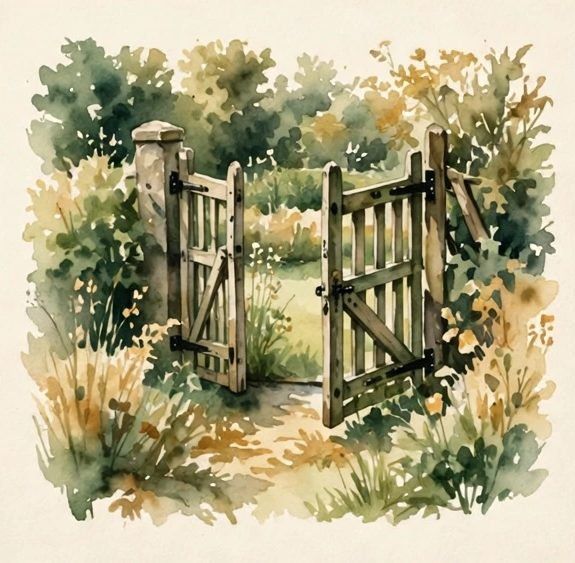
A garden gate half open in late summer, moved by no visible hand.
Not every hinge in this house is on a door. Some are on garden gates, and they move at the speed of seasons: a quarter-turn by spring, another by the harvest, the gate standing noticeably more open one year than the year before, with no afternoon anyone can point to and call the turning. The house keeps this hall for those hinges. Everything recorded here happened — the lives really did change direction, as surely as any life changed by a letter or a slam — but it happened the way a river changes a valley, or a habit changes a face: continuously, and therefore almost invisibly, and therefore almost never thanked or blamed.
The slow hinges are missed for an administrative reason: the register prefers dates. Memory files its turning points under afternoons — the letter, the meeting, the night everything was said — and a change spread evenly over four hundred afternoons gets filed nowhere, or filed under character, as if the keeper had simply become someone else by growing. Perhaps they had. But growing, examined closely, is only the name we give the slow hinges when we have agreed not to look at them. The house looks. In this hall the entries are dated by season and by decade, in a handwriting that gets no less careful for being approximate.
The keeper tests these hinges the only way they can be tested: by comparison across gaps. A photograph of the gate each year, taken from the same stone. A sentence in the register each winter, in the same plain words, until the sentences themselves begin to disagree with one another — that disagreement is the hinge, caught in the act. Keepers who want to find their slow turns are advised to stop searching single afternoons. The evidence is in the differences between any two ordinary days set far enough apart: the opinions quietly reversed, the fears quietly retired, the door that, somewhere in the decade, simply stopped being locked.
74The Hinge That Was a Season
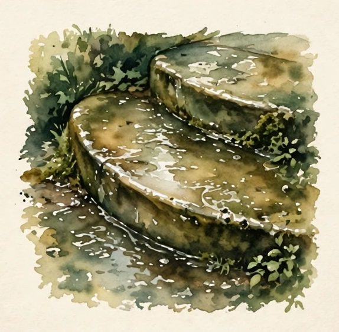
A wet stone step worn into a curve by one long season of feet.
Sometimes the smallest honest unit of turning is not a moment but a season. There was the spring of the long walks, taken for no reason the keeper could have stated, at the end of which the old job had somehow become unreturnable-to. There was the winter of the early bedtimes, entered as a surrender and exited as a discipline. Ask the keeper to name the day in either season when everything changed and they will laugh, correctly. The change has no day. It has weather, and a direction, and a hundred small mornings each contributing a degree so small that only the season, added up, can be seen to have swung at all.
A season can do what no event can: it can make a change deniable at every step and undeniable at the end. Nobody decided, in any single week, to stop loving the city, or to start needing the quiet, or to forgive the old enemy in the provinces of the heart. The season decided it the way frost decides a hillside — nightly, impersonally, a fraction at a time, until one morning the keeper packed a bag, or did not pack one, with the calm of someone for whom the question had been settled by a committee that met only in their sleep. The house records such seasons as hinges, in full, without apology for the blur at their edges.
Keepers sometimes disparage these hinges for lacking a date to commemorate, as if a turning without an anniversary were a lesser instrument. The house suggests the commemoration the season itself offers: the first cold evening, the week the walks lengthen, the smell of the particular rain under which the direction changed. A season can be kept the way a date is kept — returned to, walked through, thanked or mourned in its own terms. The keeper who learns to honor hinges by the season stops demanding that every change arrive with paperwork, and the register, relieved, begins to fill with entries the old system would have missed entirely.
75Water Changes the Step It Falls On
Outside the scullery door there is a stone step, and above it a gutter with a fault in it, and for thirty years the rain has fallen from that fault onto that step, one drip at a time, always in the same place. The step has a hollow in it now, smooth as a bowl, that holds the rain for an hour after every storm. Nothing about the arrangement was ever decided. No single drip can be charged with the hollow. And yet the stone is changed — changed more certainly than many a door in this house was changed by being slammed. Water is the house's emblem for every force that works by returning.
What returns, shapes. This is the whole physics of the slow hall, stated at the level of plumbing. The daily practice, the weekly letter, the small recurring kindness and the small recurring slight — each lands like the drip, beneath notice, and each is carving its hollow in exactly the place it always lands. The keeper cannot be charged with any single day of it, and is entirely responsible for the shape of the stone. The house finds this a fair description of most of a life: acquitted drip by drip, convicted by the hollow. Which is why the keeper inspects the drips, now, and occasionally moves a gutter.
The house is careful, in this room, not to let the step stand only for damage. The hollow holds water now, and the birds have found it, and on bright mornings after rain the step carries a small sky in it, which the keeper has come to like inordinately. Water changes the step it falls on — changes it, the house insists, in the neutral sense this whole estate prefers. Some of the keeper's deepest hollows are drinking bowls. Some carved places turned out to be exactly the shape a life needed for holding what it loves. The drip decides nothing about which. The keeper, looking down at the step, decides that.
The Hinge Desk
One desk receives all correspondence for this house — questions, corrections, and word of any hinge: the letter, the small yes, the season that turned it slowly, and what the new floor plan feels like to walk. It is read in the order it arrives.
76A Thousand Small Swings
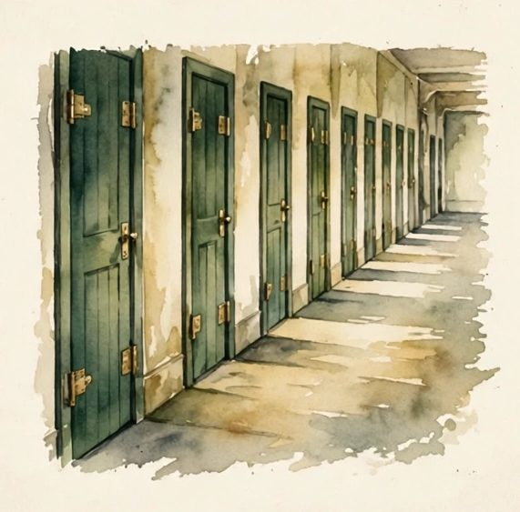
A long row of small doors along a corridor, each opened a crack.
A door does not need one great push to change its angle; it needs a thousand small swings, each too slight to remark, and time. This is the arithmetic of the slow hall, and the keeper posts it here because it is so easily lost among the louder exhibits. A page read every night is a thousand pages. A sentence of the new language, attempted daily and badly, is fluency by a road no one applauds. A sharp word not said, ten thousand times, is a temperament. None of these swings will ever be dated in the register. Together they have moved the heaviest doors in the building, and moved them without a sound.
The arithmetic is impartial, and the house would be cheating to post only the encouraging half of it. A thousand small swings also describe the slow closing of things: the instrument unpracticed a season at a time, the friendship unanswered a week at a time, the door of the body stiffening a degree each year it is not asked to open fully. Nothing dramatic happens in either direction, which is precisely the danger and the hope of it. Drift feels like standing still. The keeper who understands the arithmetic stops waiting to feel the turn, and starts counting swings instead — the one honest instrument this hall possesses.
There is a consolation hidden in the impartiality, and the house does not begrudge it. If the great turns cannot be scheduled — and this house has always held that they cannot — then these small swings are where a life is actually steered. Not at the fork, once, in a panic of signage, but daily, at the level of the drip and the degree. The keeper may not choose the weather or the letters. The keeper chooses, a thousand times and mostly unwitnessed, which way the small doors swing. The register has audited many lives and reports that, in the long run, the audit always comes back to this page.
77Drift Is a Direction Too
A river bending a whole valley, slow water rounding the land.
Drift has a poor reputation in this house's neighborhood, where it is spoken of as the opposite of steering. The register disagrees, on the evidence. Drift is a direction too — the direction of the current, taken at the speed of the current, by a vessel that has stopped, for a while, pretending the water is still. Half the consequential arrangements of a life are arrived at by drift: the city kept because the lease kept renewing, the trade deepened because the work kept arriving, the friendship that became the central one because neither party ever moved away. Currents are not accidents of geography. They are geography.
The house neither condemns drift nor drapes it in romance. Some currents in the register carried keepers toward harbors they would never have chosen with a chart, and some carried them, just as quietly, onto sandbars where years were spent in pleasant shallows. What the house asks is only that the current be noticed and entered in the ledger as what it is: a direction, with a source and a rate, making decisions on the keeper's behalf at the standard hourly rate of a life. An unnamed current governs. A named one can be allowed for, compensated for, or — on the rare necessary occasion — rowed against.
Keepers confessing to drift often lower their voices, as if admitting that the central movements of the life were unearned. The house restores the volume. A life moved by currents is not a lesser life; it is the standard model, delivered everywhere, and the keepers who claim pure navigation are usually misreading their own charts in the flattering direction. The land itself drifts — continents at the speed of fingernails — and nobody calls the map a failure. What matters, at this end of the corridor, is accuracy about the mechanism. Drift got the house here. The entry is made without italics, and the keeper walks on.
78The Turn You Noticed Last
The last turning point to be discovered is almost always a slow one, and it is usually discovered in the act of polishing a louder story. The keeper is telling it again — the letter, the meeting, the famous afternoon — when something in the telling snags: the decision, examined, was already half made before the letter arrived; the meeting only ratified a season of drift; the new life had been quietly assembling itself in the corridor for years, waiting for its paperwork. The loud hinge does not become a lie at this moment. It becomes a doorbell. The bell rang in an afternoon. The house had been turning for a decade.
Being noticed last is not a demotion, and the house is careful with keepers who feel, on making the discovery, that they have been living on a false prospectus. The credits simply get revised, as credits are revised in any honest ledger: the season is entered above the afternoon, not instead of it, and the afternoon keeps its smaller, truer title — the day it became undeniable. Often the turn was noticed by others long before the keeper: the friend who remarked, years back, that something had shifted; the remark was filed under politeness at the time. The register apologizes to such remarks, formally, in this room.
And some slow turns, the house admits, have not been noticed yet — not by the keeper, not by anyone still in a position to file a remark. The hall leaves a chair out for them, permanently, the way one leaves a lamp in a window for a traveler whose hour is unknown. This is not a failure of the method; it is the method's final honesty. A life audited at any given Tuesday is a life mid-turn, with some of its hinges still swinging below the threshold of anyone's attention. The register stays open on the desk for them. The pencil is sharp. The corridor, as always, is longer than the day's report on it.
79Slow Is Not the Same as Never
A door whose shadow has moved clear across the floor since morning.
Slow is not the same as never, and the house posts this sentence in the slow hall the way harbors post the tide tables: not as poetry, but as information mariners perish without. Keepers mid-turn are prone to a particular misreading — they measure the gate against yesterday's photograph rather than the decade's, find the difference beneath notice, and conclude that nothing is moving and nothing ever will. The conclusion is wrong in a way that costs years. The gate that moves a degree a season arrives, in ten seasons, at an angle no single push could have achieved, and it arrives with its hinges unwrenched, which loud arrivals rarely manage.
The house, in fairness, posts the matching caution beside it: slow is not the same as certain, either. Gates also rust at a degree a season, and a drift unexamined can spend a decade arriving at a sandbar. Slowness is a speed, not a promise. What the tide table actually guarantees is narrower and enough: that a keeper who keeps swinging the small swings, and keeps naming the current, is not standing still — whatever the daily evidence argues. The house has buried too many verdicts of never, delivered confidently at year three of a forty-year turning, to let the word be used at the desk without a deposit of doubt.
So the keeper of a slow turn is advised into a particular posture, which this hall calls patience and defines without sentimentality: continue the swings, lengthen the intervals between measurements, and let the decade do the arguing. Patience is not standing at the gate with folded arms, willing it to move faster by witness. A watched gate opens at the standard rate. Patience is walking the rest of the rounds — the other doors, the other halls, the lamps and the letters — and coming back to the photograph, in season, to find the angle changed again. It always has. That is the whole finding of this hall, and the keeper is welcome to it.
80The House Records Both Clocks
A doormat faded by ten thousand crossings, still lying square at the door.
On the wall of this hall the house keeps two clocks, and neither is allowed to call the other a liar. The first is the ordinary clock of events, with its afternoons and its dates in ink: the letter, the slam, the night everything was said. The second keeps slower time — seasons, decades, the drip and the degree — and its entries are made in pencil, in margins, in the handwriting reserved for things still moving. A life honestly recorded needs both clocks running. The house has audited registers that kept only the first: thrilling documents, half of them wrong, with the quiet majority of every turning missing from the record entirely.
Recording both clocks changes the house's justice, and the keeper feels the change at the desk like a change in the light. With only the fast clock running, every life acquires villains and saviors dated to single afternoons — the person who said the sentence, the day the letter came — and whole decades of weather go unthanked and unblamed. With both clocks running, the thanks get distributed the way the turning actually happened: an afternoon here, a season there, a current underneath everything. So does the blame. It is a fairer register and, the keeper notes, a calmer one. No single afternoon has to carry all of either.
The keeper leaves this hall by the far door, with both clocks still audible behind — the tick of the afternoons and, beneath it, something slower than a tick, the sound a gate makes across a decade. The turns ahead, in the next hall, concern living in what the turning made; but the keeper carries this hall's whole doctrine in one sentence, suitable for the register's margin: a life turns loudly a few times and quietly all the time, and an honest house keeps the records of both, in ink and in pencil, and believes them equally. The corridor continues. The lamps, as ever, are lit for the walking, not the waiting.
81No Single Afternoon to Blame or Thank
The slow hinge resists the story form, and the story form is greedy for afternoons. A telling wants a date it can circle, a door it can point to, a before and an after divided by one clean hour. The season does not oblige. A turn that took three years offers no single day to stand in the doorway of the telling, and so the telling is tempted to skip it entirely and promote some louder, briefer door into its place. The house refuses the substitution. The record is kept in seasons as well as in dates, and a turn that cannot be circled can still be entered honestly.
This matters because blame and thanks are both forms of aiming, and an aim that insists on a single afternoon will usually miss a slow turn altogether. The drift that changed a life cannot be thanked the way a rescuer is thanked, on the day, by name. Nor can it be blamed the way a slammed door is blamed. The keeper's practice is humbler: to acknowledge the whole span, the way one acknowledges weather that has altered a coastline. No single wave did it. All the waves together did, and the coastline is genuinely different, and both halves of that sentence belong in the record.
So the register leaves the space for the date blank, deliberately, and writes the season instead. Beside it goes no apology for the blankness. Some entries read: the years when the reading changed, the long winter after which the route to work was never the same, the slow spring in which a friendship became a household. None of them has an afternoon in it. All of them are load-bearing. The house stands different because of them, and the keeper, who tests each hinge by hand, knows the slow ones carry as much of the building as any door that ever slammed in the wind.
82The Garden Turned, Not the Door
A staircase that turns twice, each landing holding its own light.
Not every slow turn happens in the corridor. Some happen outside the house entirely, in the garden, where nothing swings on anything and the change is a matter of growth and neglect and seasons leaning on the fence. A garden turns when the tree planted as an afterthought becomes the shade the whole plot is arranged around. It turns when a path, walked a thousand times to a gate no longer used, grasses over and stops being a path. Nobody opened or closed anything. The garden simply became a different garden while the house was looking the other way.
The keeper records these with particular care, because they are the turns most easily missed in the inventory. A life can change its center of gravity outdoors: the work that moved from the desk to the bench, the mornings that migrated from the study to the greenhouse, the friendships that once filled the front rooms and now live quietly at the garden table. The floor plan inside may look untouched. The address is the same. And yet the house is lived in from a different side than before, and everyone who visits can feel it without being able to name a single door responsible.
There is a consolation filed with this entry, and the keeper underlines it. A garden that has turned can turn again, gently, in the same way: by growth, by season, by one small planting at a time. Not every rearrangement requires the drama of the hinge. Some of a life's largest changes arrive as compost and patience and a tree deciding, over a decade, to be large. The house honors the door for its decisiveness. It honors the garden for its honesty about how most turning is actually done — slowly, root by root, in weather, out of sight.
83Patience Is a Form of Hindsight
A garden that has quietly changed its shape, its paths redrawn by walking.
Hindsight is usually imagined as a lamp carried backward — the sudden illumination of a road already walked. But there is a second kind, slower and less theatrical, which is simply patience applied to the past. Given enough years, the season that looked like wandering resolves into a route. The drift that felt like failure acquires, in the long view, the shape of an approach. Nothing about the years themselves changes. What changes is the length of corridor the keeper is willing to look down before reaching a verdict about where it was going.
This is why the house is in no hurry to classify its slow turns. A hinge still swinging is hard to read; its direction shows only across the whole arc. The keeper has learned to leave certain entries unfinished for a decade at a time, written in pencil, revisited at intervals. Some entries that began as losses soften, in the patient view, into relocations. Some that began as triumphs reveal the slow cost they were quietly charging all along. Neither reading was available in the first year. Both were available in the tenth, to anyone willing to wait rather than conclude.
Patience, then, is not the opposite of hindsight but one of its instruments. The quick hindsight of the slammed door is real, and the house records it gladly. But the slow hindsight belongs to those who let a turn finish turning before they name it. The keeper's advice, such as it is, is only this: date the entry, describe the season plainly, and leave a margin wide enough for the years to write in. The margin is where the truth of a slow hinge usually arrives, unhurried, in its own hand, long after the afternoon everyone else was watching.
84The Slow Hinge Still Counts
This hall closes with the entry the whole house was arranged to protect: the slow hinge counts. It counts in the inventory beside the letter and the slammed door. It counts when the floor plan is drawn and the before and after are compared. It counts even though no guest will ever be told its story at the door, because it has no door in it, and no afternoon, and no sentence that can be quoted. The register gives it the same ink as the loudest turn in the building, and the same space, and the same respect.
Counting it changes how a life is read. Without the slow hinges, the story of a house becomes a story of weather strikes — arrivals, collisions, doors — and the long labor of becoming is edited out as mere interval between events. With them, the intervals become the substance and the events become punctuation. Most keepers, looking honestly, find that the punctuation is sparse and the substance is slow: the years of practice, the seasons of repair, the drifts of affection and ambition. A house that counts only its afternoons understands itself the way a headline understands a harvest.
So the keeper enters the slow turns last in this hall and underlines none of them, because underlining would miss the point. They are not the hidden truth behind the loud ones. They are simply the other clock, ticking at its own rate in the same house, turning the same life at a speed the calendar cannot see. Both clocks are on the wall of the register room. Both are consulted. And when the inventory is finally read aloud, the slow hinges take their places in the list without apology — counted, dated by their seasons, and load-bearing, every one.
85Living in the After
A room arranged anew in morning light, its furniture finding new walls.
Every hinge, loud or slow, delivers its keeper to the same address: the after. This hall is about living there — not visiting it in memory, not standing in its doorway with a coat still on, but actually residing in the rearranged house, with its new floor plan and its unfamiliar routes between the rooms. The after is where the rest of the life happens. It deserves more than the status of an epilogue to the turn that produced it. The keeper's position is plain: the after is not the story's remainder. It is the house, now, and it is to be lived in at full size.
Arrival takes longer than the turn itself. A door can swing in an afternoon; learning the new corridor takes a year of stubbed toes and wrong turns at night. The keeper expects this and budgets for it. The after is learned the way any new house is learned — by walking it, daily, until the body knows where the light switches are. Until then, a certain amount of groping in the dark is not failure but orientation. The house keeps the lamps low and the landings clear for exactly this season, and it does not mock its keeper for reaching for a handle that has moved.
What the after asks, above all, is tenancy rather than tourism. The visitor to an after keeps comparing it to the before, measuring rooms against a plan that no longer exists. The tenant hangs pictures. The keeper has watched both postures and records the difference without romance: tenancy is slower, quieter, and considerably less quotable, and it is the only one of the two that builds anything. This hall is the tenant's hall. Its subject is not the drama of the door but the ordinary, accumulating art of being at home on the far side of it.
86The After Is a Place, Not a Verdict
Old keys hanging beside new doors, none of them thrown away.
It is tempting to treat the after as a judgment — as though the turn had been a trial and the rearranged house its sentence, favorable or not. The keeper declines the metaphor. The after is a place. It has weather and neighbors and a route to the shops. It can be described, mapped, and improved in small ways, and none of those activities requires deciding whether it is what the keeper deserved. A verdict ends a conversation; a place begins one. The house functions considerably better when its later rooms are lived in as geography rather than as outcome.
This distinction does practical work. A keeper who believes the after is a verdict spends years either defending it or appealing it, and both occupations consume the very years the after consists of. A keeper who treats it as a place does the ordinary mathematics of places instead: what is near, what is far, what needs repair, what gets the morning light. The turn is honored in the register, in its own hall, with its own entries. The after is honored differently — by being furnished, maintained, and walked without a running commentary on whether the door that led here should have swung.
None of this forbids assessment. Places can be assessed; some afters are genuinely harder country than the befores they replaced, and the house records that without flinching. What is refused is only the courtroom furniture — the bench, the sentence, the idea that a life rearranged itself in order to deliver a moral. The keeper's ledger is a surveyor's document, not a judge's. It notes the new arrangement, the slope of the ground, the direction of the light. Then it puts the kettle on, because places, unlike verdicts, are where people actually live.
87The New Floor Plan, Learned by Walking
Nobody learns a floor plan from the drawing. The drawing can be studied at the desk for an evening and forgotten by morning; the corridor itself is learned by walking it, wrong turns included, until the knowledge passes from the mind into the feet. So it is with the after. The keeper can recite the new arrangement long before living it fluently — can explain exactly what changed and why — and still reach, at midnight, for a door that is no longer there. The recitation is not the learning. The walking is, and the walking cannot be rushed or delegated.
The house is patient about the tuition. It expects the keeper to spend the first year of any after bumping into the rearranged furniture, and it does not grade the collisions. Old routes persist in the body like old addresses on envelopes; they are crossed out one delivery at a time. What matters is that the walking continues — the same errands, run through the new rooms, on ordinary days, until one morning the keeper realizes the route was completed without thought. Fluency arrives unannounced, usually mid-errand, and is recognized only in retrospect, like most honest kinds of arrival.
There is a further comfort entered in the margin of this room. A floor plan learned by walking is learned better than one learned by intention. It survives distraction, tiredness, and bad weather, because it lives below deliberation. The keeper who has walked the after ten thousand times owns it in a way no resolution could confer. The turns gave the house its new shape; the walking makes the shape a home. This is the hall's quiet thesis, and the keeper states it once, plainly: you do not think your way into the after. You commute your way into it, daily, until it is simply where you live.
88Old Keys for New Doors
An ordinary kitchen in the after, a kettle on, the morning proceeding.
A rearranged house creates a practical problem at the key rail: which of the old keys still earn their hooks. The keeper's rule is more lenient than most. Old keys are not thrown away merely because the plan has changed. Some open the new doors directly, their wards unaltered by the move. Some open nothing anymore but are kept a while anyway, out of a respect the register does not apologize for — a key is also a record of having once been trusted with a room. Eviction from the rail is a considered act here, never a reflex of the rearranging.
The fit, when it happens, can be a small astonishment. Skills cut for the before turn the locks of the after as if made for them: the patience learned in one household running the machinery of another, the craft of a closed trade keeping its edge in an unrelated kitchen. And the opposite also occurs, recorded just as plainly — the master key of the old house, the one that opened everything that mattered, fitting nothing in the new arrangement at all. The keeper notes both outcomes without drawing a doctrine from either. Keys are tested, not theorized about. The rail keeps what the testing spares.
What the rail teaches, over years, is a kind of continuity the milestone stories miss. A life rearranged is not a life replaced; the same hand carries the keys across the threshold, and much of what the hand knows still works. The after is new country, but the traveler is not new, and the inventory of the traveler's pockets is part of the survey. When the accounts of a turn are drawn up in this house, the keys are counted among the assets — old iron, honestly weighed, some of it still opening doors the keeper has not yet tried.
89The After Has Its Own Ordinary Days
A door that opens both ways, standing easy on its hinge.
From a distance, the after of a great turn looks like a monument — a condition, a new era, a life divided into volumes. From inside, at eight in the morning, it looks like toast. This is not a disappointment but a discovery, and the keeper records it as one of the hall's load-bearing facts: the after has its own ordinary days, in bulk, thousands of them, and they are not a falling-off from the significance of the turn. They are what the turn was for. A door swings so that a household can get on with its mornings on the other side.
The ordinary days do quiet work that the turn itself cannot do. They metabolize the change. In the first weeks of an after, everything is evidence — every errand a referendum on the door. By the five-hundredth ordinary day, the referendum is forgotten and the errand is just an errand, and that forgetting is not betrayal but completion. The house keeps a rough proportion in its register: for every afternoon that changed everything, there are years that changed it back into a life — slower, less quotable, and finally more decisive than the hinge, because they are where the hinge's consequences are actually lived.
So the keeper resists any telling in which the after is a long echo and nothing more. Echoes fade; households accumulate. The after grows its own Tuesdays, its own small hinges, its own weather that owes nothing to the famous door. Someday a later keeper, inventorying this house, may find the turns of the after more interesting than the turn that opened it. The register leaves room for that judgment. It has always left room. The monument can look after itself; this hall is for the mornings, which cannot, and which turn out to be the substance of the whole arrangement.
90You Are Not Only Who the Turn Made You
A turn can be so large that the telling starts to swallow the keeper: the one who left, the one who arrived, the one to whom the letter came — the person reduced to the passenger of a single door. The house enters a correction here, in firm ink. You are not only who the turn made you. The keeper predates every hinge in the register and survives each one with the same laugh, the same stubborn preferences, the same way of taking tea. The turns rearranged the house. They did not manufacture its tenant, and the tenant's older furniture — temperament, humor, appetite — was carried through every doorway by hand.
This is not a small entry. A keeper who believes the turn authored them will wait, ever after, for turns to do the authoring — will treat the self as something delivered by events, to be redelivered by the next one. The register's whole labor argues otherwise. Again and again the inventory shows the same person choosing, enduring, misunderstanding, and persisting on both sides of the famous doors. The hinges are real, and so is the hand that was on the door before it swung. Credit in this house is shared between the turn and the turned-upon, and the larger share, on the evidence, belongs to the latter.
What follows is a kind of relief the hall is glad to offer. If the keeper is not only the product of the turns, then no single turn gets to be the whole explanation — not the glorious one and not the grievous one. Both are demoted, kindly, to chapters. The person in the after is a longer book: begun before the first hinge in the register, continuing past the latest one, written mostly in the plain prose of ordinary days. The keeper closes this room's entry with the surveyor's note used throughout the house: the floor plan changed. The resident, demonstrably, carried the furniture.
The Hinge Desk
One desk receives all correspondence for this house — questions, corrections, and word of any hinge: the letter, the small yes, the season that turned it slowly, and what the new floor plan feels like to walk. It is read in the order it arrives.
91The Before Is Not an Enemy Country
A sealed envelope resting on a writing desk, kept rather than opened.
Every after defines itself partly against a before, and the definition easily curdles into enmity: the old house retold as a prison, the old plan as a fraud, the keeper who lived there as a stranger best disowned. The house refuses this convenience. The before was inhabited honestly by the same keeper, with the information then available, and much of it was good in ways the after still draws on. A rearrangement is not a repudiation. The register keeps both plans in the same drawer, and it opens the older one without embarrassment whenever the survey requires it.
The enmity is not only unjust; it is expensive. A keeper at war with the before must patrol the border constantly, explaining away every fond memory as a lapse and every surviving habit as a smuggler. The after, garrisoned like that, becomes a smaller place than the plan promised. The keeper's alternative is a settled peace: the before acknowledged as a former country — visited in the mind with a kind of citizenship of memory, its language still understood, its dead still mourned on their days. Peace costs less than patrol, and unlike patrol, it leaves the keeper free to furnish the present.
None of this means the door is regretted, or should have stayed shut. Some doors in this house were exits from genuine harm, and their swinging is entered in the register with gratitude and a clear eye. But even the hardest departure does not require the whole of the before to be convicted. A room can be left without the street being condemned. The keeper writes the distinction down because it is so often lost in the relief of arrival: the before is not an enemy country. It is a former one, and former countries are where the keeper's people, and most of the keeper's stories, still live.
92Write to the Before, Occasionally
A gate that swings freely in both directions, well kept and unlatched.
Correspondence is the keeper's instrument of peace, and this room recommends it in its literal form. Write to the before, occasionally — not in expectation of reply, not as a performance of healing, but the way one writes to a former country whose news still matters. A letter can carry what a visit cannot: the plain report of the after, offered without argument. I live in the rearranged house now. The light comes in differently. The keys are mostly the same. Such sentences, set down and sealed, do what border patrols never do — they convert a frontier into a distance, and a distance can be lived with.
The letter is addressed, in this house's practice, to whatever can still receive it: a person from the before who remains in correspondence, a place kept in photographs, the keeper's own earlier self, filed under the years. The recipient matters less than the discipline. Writing imposes sequence and proportion; the grievances must queue like everyone else, and the gratitudes get sentences of the same length. Keepers who write to the before report a consistent effect — the before becomes describable, and what is describable loses its power to ambush. The unanswered letter is not a failed letter. It was never a request.
Occasionally is the operative word, and the register underlines it. A correspondence, not a commute. The keeper who writes daily to the before is in danger of living at the border post, and the house did not rearrange its plan to house its keeper in a frontier hut. A letter a season, perhaps; one at the year's turning; one when the news is genuinely large. The rest of the time, the gate at the border stands in its usual state — kept, oiled, and open both ways, because a settled peace does not require a locked door to prove itself.
93The Hinge Swings Both Ways
A hinge is a two-way mechanism, and the house insists on the engineering. The same door that swung the keeper out of the before swings, in memory and sometimes in fact, back toward it — and this is not a defect in the door or a failure of the keeper's resolve. It is how hinges are made. The keeper will stand, at intervals for the rest of the tenancy, in the old doorway with the old light on the old floor, feeling the full weight of what was. The register does not record these standings as relapses. It records them as the hinge doing what a hinge does.
What matters is the distinction between swinging and relocating. The door swings; the keeper's address does not change with every swing. Mornings in the after will sometimes begin with an hour spent entirely in the before — grief, fondness, or plain curiosity holding the door — and the day can still proceed in the new plan afterward. Trouble begins only when the keeper mistakes a swing for a summons, a draft of old air for instructions. The house's counsel is mechanical rather than moral: let the door move, note the weather it brings in, and continue the day's business on the side where the furniture is.
In time, and the house promises nothing quicker, the swings grow shorter. A well-kept hinge does not stiffen; it simply stops being the corridor's main event. The keeper passes the famous door the way one passes any door in a long-inhabited house — aware of it, occasionally pausing, no longer arranging the whole day's route around its drama. That is the terminal state the register calls peace, and it is reached not by sealing the door but by keeping it: functional, oiled, and in proportion. The hinge swings both ways. The house stands anyway. Both facts are entered, and neither cancels the other.
94Later Turns Are Already Quietly Possible
A kept door with its key hanging beside it, ready either way.
The after is not a final draft. This is among the hall's most important entries, and the keeper makes it early in any tenancy, before the new plan hardens into a new orthodoxy: later turns are already quietly possible. Somewhere in the rearranged house there is a door the keeper has not noticed, on a hinge not yet tested, and the life will swing on it in its own season. The register leaves blank pages at the back for exactly this reason. A floor plan that cannot be revised is a floor plan that will be falsified by the living of it.
Possibility, here, is not a program. The house sells no method for producing turns, schedules none, and would regard a keeper hunting for the next hinge as a keeper neglecting the current rooms. The quietness of the phrase is the point: later turns are possible the way weather is possible — as a condition of being housed in time, not as a task. The keeper's preparation for them is unglamorous and mostly complete already: keys kept, hinges oiled, the register honest, the before at peace. A house in that condition meets its next door the way it met the others — ordinarily, on a weekday, without an announcement.
There is a steadiness available in this entry that the dramatic accounts of turning rarely offer. If turns will come anyway, unbidden and unbought, then the keeper's work is not to manufacture significance but to maintain the building — to keep the corridor walked, the lamps lit, the accounts straight. The significance arrives on its own schedule and finds, if the maintenance has held, a house capable of turning without breaking. The register's final word in this room is the surveyor's again: the plan is current, the pages at the back are blank, and both of those are as they should be.
95Keep the Door; Keep the Key
A house rearranged, standing calm in the evening light.
When a tenancy in the after settles, keepers are sometimes urged — by tidiness, by drama, by the wish to make a clean exhibit of the life — to dispose of the famous door: to seal the doorway, burn the letter, strike the hinge from the register and live as though the house had always had this shape. The house advises the opposite, and enters the advice as one of its oldest rules. Keep the door. The door is evidence — of where the corridor turned, of what the keeper walked through, of the fact that the current arrangement was arrived at and not merely found. A house that hides its hinges misunderstands its own architecture.
Keep the key, too, though it open nothing anymore. The key is the smaller and more portable half of the same respect: proof, carried in a pocket, that the keeper was once trusted with another arrangement of life and crossed it honorably. Keys outlast their doors by decades in this house's drawers, and they are not kept from sentimentality alone. They calibrate the keeper. Holding the old key beside the new one is the quickest survey of the distance traveled, and there are evenings in every after when that survey is worth more than any reassurance a friend can phrase.
The doctrine completes itself in the negative space: keeping is not using. The door stays in the wall; it is not rehung as the house's entrance. The key stays on its hook; the keeper does not spend the evenings trying it in imaginary locks. The register's whole ethic of the after lives in that distinction. Honor the turn by retaining its instruments. Honor the after by living in it. A house that can do both — the door kept, the key kept, the mornings proceeding in the new plan — has achieved the only monument this hall recognizes: an arrangement in which the past is preserved precisely by not being lived in.
96The House Stands, Arranged Anew
This hall closes where all its rooms have been pointing: the house stands. It stands rearranged — a plan the keeper did not grow up in and did not entirely choose, furnished partly with old keys that still fit and partly with new doors still being learned. It stands with its before at peace across a kept border, its famous doors retained but no longer presiding, its ordinary days accumulating into the true substance of the after. If the turning points were the drama, this standing is the achievement, and the register enters it without italics, the way one enters the completion of any long repair.
Arranged anew is the operative qualification, and the keeper is precise about it. The house did not return to its original plan; no apology is owed for that, and no restoration is scheduled. Nor did it become a different house altogether; the foundations are the ones in the earliest surveys, and the resident, as an earlier room established, carried the furniture personally. Anew is a middle word for a middle truth — continuity with genuine difference, the plan revised and the address unchanged. Most lived houses, honestly inspected, turn out to be exactly this, and the register finds the ordinariness of it reassuring rather than flat.
So the survey of the after ends with an instruction disguised as a description: stand in it. The keeper is to regard the rearranged house not as the waiting room of some further, truer arrangement, but as the premises. Later turns will revise it; the blank pages are ready; none of that demotes the current plan from its status as home. The lamps are lit in the new pattern tonight. The kettle is in its new place and is found without thinking, most mornings now. The house stands, arranged anew — and the hall's last entry is the sound, faintly audible through every wall of it, of a life being lived at full size inside.
97Step One: Name One Turn, Only One
One door singled out by a beam of light in a quiet corridor.
The steps begin with an act of restraint disguised as an act of selection: name one turn, only one. The keeper who attempts the whole inventory at once — every hinge, loud and slow, in a single sitting — will finish with a summary instead of an account, because the attention thins as the list lengthens and each door gets the same hurried glance. One turn, named singly, gets the full survey: its day, its season, its consequences counted one by one. The register has room for the rest later. The steps are a staircase, not a hall, and staircases are climbed at the pace of single feet.
Choosing the one is itself instructive, and the house does not prescribe the choice. The keeper may begin with the loudest door or the quietest hinge, the turn most thanked or the one still mourned; the order matters less than the singleness. Often the choosing reveals the current state of the accounts — the turn that rises first to the hand is frequently the one whose entry has gone longest unaudited. The keeper notes that, too, in the margin. It is information, offered free, before the step proper has even begun.
And the singleness is a protection for the turns not chosen. A hinge examined alone is examined fairly; a hinge examined as the fourteenth item in a list is examined as a comparison, and comparisons corrupt the register faster than any other habit the keeper has. The unpicked doors wait without penalty. They are not ranked by their waiting. When their steps come, they will be named with the same exclusiveness — one turn, only one, and the whole of the house's attention standing in its doorway until the survey is done. The staircase has twelve steps and all the time it needs.
98Step Two: Date It as Honestly as You Can
A small closed notebook on a hall table, its pencil resting beside it.
The second step is a date, and its whole difficulty is honesty. A turn wants a clean date the way a monument wants a plinth: the day of the letter, the night of the conversation, the afternoon of the decision. Sometimes the record supports one, and the keeper enters it gladly. Often it does not — the turn was a season, or the day is genuinely lost, or two candidate dates contend and both are half right. The step does not ask the keeper to manufacture precision. It asks for the most honest dating available: the year certain, the season probable, the day unknown, each labeled as what it is.
This labeling matters more than it might appear. A false date, once entered, starts to govern the telling — anniversaries get kept on it, the story arranges itself around its neatness, and soon the keeper is commemorating a precision the evidence never supplied. An honest entry, ragged as it looks, keeps the account trustworthy at exactly the point where trust is load-bearing. The register would rather read 'the winter after the move, probably February' in a steady hand than a confident date in a borrowed one. Honesty about the dating is the survey's way of staying a survey.
For the slow hinges, the step adapts rather than fails: their dates are spans, and spans are entered as spans. The keeper draws the bracket generously — the years of the drift, the seasons of the turn — and resists the pressure to collapse the bracket onto its most dramatic day. Readers of the register in later years will find both kinds of entries side by side, the single days and the long brackets, and the house intends the juxtaposition as the truest thing in the book: a life turns at two speeds, and its dates, honestly kept, are the record of both.
99Step Three: Say What the Day Felt Like Then
Before any accounting of consequences, the step asks for the day itself, remembered at ground level: what the turn felt like then, at the time, in the body and the weather of it. This is harder than it sounds, because the later knowledge crowds the doorway. The keeper now knows what the letter contained, what the yes set in motion, what the season was turning toward — and the day, as lived, knew none of it. The step requires a deliberate unknowing: the telling put down, the outcome bracketed, the afternoon restored to its original ignorance, in which it was mostly ordinary and slightly confusing.
The register values this paragraph of every entry above the analysis that follows it, because it is the paragraph most easily lost. Consequences can be reconstructed from evidence at any later date. The felt quality of the day — the errands that surrounded it, the mood it interrupted, the way nothing in it announced itself — exists only in memory, and memory revises it a little with every retelling. To set it down plainly, once, is to preserve the one artifact no archive can recover later: the turn as it appeared to the only witness who was actually present, who is also, inconveniently, the one most tempted to overwrite it.
Keepers sometimes resist the step, finding the plain day anticlimactic beside the famous consequences. The house is firm. The anticlimax is the evidence. A turn that arrived disguised as a Tuesday is a different kind of fact about a life than a turn that arrived with trumpets, and the register's honesty depends on distinguishing them. Write the day as it was: the weather, the errand, the unremarkable hour. Then, and only then, let the next step open its ledger and begin the count of what the unremarkable hour quietly rearranged.
100Step Four: List What Actually Changed
The same doorway seen honestly at dawn, its light unembellished.
Now the ledger opens, and the step is an inventory before it is anything else: list what actually changed. Actually is the discipline of the room. The keeper is to enter the verifiable rearrangements — the address, the work, the household, the daily route, the company kept, the money's direction, the language spoken at breakfast — the furniture that demonstrably stands in different rooms than before the turn. Sentiments may be noted as sentiments, but they do not substitute for the list. A survey that records only how the keeper feels about the new plan has not yet surveyed anything.
The list is usually shorter than the mythology and longer than the keeper's first estimate, and both surprises are instructive. Shorter, because the famous turn, examined closely, turns out to have changed some celebrated things very little — the temperament, the oldest friendships, the way of taking tea. Longer, because the consequences ramify into corners no telling bothers with: a different shop, a different silence at a different hour, a skill quietly retired, a road never driven again. The keeper writes them all at the same size. The register does not bold. Ramifications entered plainly accumulate into the first honest map of the after.
There is a temptation, at the end of such a list, to total it — to strike a balance and announce whether the turn was, on the whole, for the better. The step forbids the totaling, and the prohibition is structural: the next step exists precisely to list what did not change, and a verdict struck before that list is written is a verdict the register will not file. Suspend the sum. Let the changed things stand in their column, accurately, unweighed. The house has never once needed a total to know the list's importance, and neither, on the evidence of the kept registers, has any keeper.
101Step Five: List What Didn't
A shelf of ordinary objects, unchanged by the rearrangement around it.
The fifth step is the fourth's necessary shadow: list what didn't change. It is the step keepers most often skip, because the drama of the changed column seems to be the whole story, and because the unchanged things are by their nature unnewsworthy — the friendship that continued without discussion, the craft that survived the move intact, the humor that reported for duty on both sides of the door. The register insists on the list anyway. A survey that maps only the alterations describes a ruin and a construction site. The unchanged column is what makes the plan a single house, continuous, inhabited by the same keeper throughout.
The entries in this column reward attention out of proportion to their plainness. Again and again they turn out to be the load-bearing walls: the disposition that carried the keeper through the turn and then through its after, the one or two relationships that no rearrangement has ever managed to move, the appetites and aversions that constitute a person's recognizable weather. Keepers who complete the step honestly often read this column longer than the other. It is the closest thing the register contains to a portrait of its keeper — not the story of what happened to the house, but the evidence of what the house is made of.
There is a discipline of proportion here, too. The two columns are not to be set against each other as a contest, change versus continuity, with the keeper as judge of which wins. They are both simply true, and their coexistence is the step's real finding: a turning point, even the one that changed everything, changed it within a life that substantially persisted. Everything, the register notes drily, turned out to be a large word for a partial list. The partiality is not a disappointment. It is the reason the keeper survived the turn with a self left over to do the listing.
102Step Six: Thank or Mourn It, Plainly
With the two lists written, the step permits the feeling — and prescribes only its manner: thank it or mourn it, plainly. Plainly excludes both of the corridor's usual costumes for such occasions, the ceremonial gratitude that thanks a turn for lessons it never asked to learn, and the ceremonial bitterness that mourns it on schedule and at volume. The register wants the unadorned version. Thanked, with the thanks sized to the evidence in the columns. Mourned, with the mourning allowed its full plain weight and no silver lining itemized underneath it like a receipt.
The step also makes room, deliberately, for the mixed case, which the keeper will find is the common one. Some turns are thanked for the door and mourned for the corridor they closed, in the same entry, in consecutive sentences. The register does not ask the keeper to resolve the mixture into a single verdict before filing. Gratitude and grief, as an earlier hall established, can share a doorway; here they share a line of the ledger, and the sharing is recorded as a fact about the turn rather than a failure of the keeper's arithmetic. Few entries in the book are more honest than the ones with both words in them.
What the step forbids is only omission disguised as politeness. The turn that is neither thanked nor mourned — merely never mentioned, its entry left blank at exactly this line — has a way of collecting its due later, with interest, in the small hours. A plain sentence now is cheaper. It does not have to be long, and it does not have to be final; the register accepts amendments at any later season. It has to exist. The keeper writes it, in the same ink as the lists, and the step is done — the account of the turn, at last, complete enough to carry.
103Step Seven: Visit the What-If Once, Briefly
A doorstep with a small vase of flowers, the offering of a brief visit.
One visit is owed, and the step schedules it with the care of a house that knows the neighborhood's dangers: visit the what-if once, briefly. The other corridor — the life in which the letter went unanswered, the yes was a no, the train was missed — has a claim on the keeper's attention, and pretending otherwise only drives the claim underground. The step pays it openly instead: a single visit, made on purpose, in daylight, with the lists of the last two steps still fresh in the hand. The what-if is to be looked at, not longed over and not denounced. Looked at, the way one looks at any road from a junction one actually took.
Brevity is the step's engineering, not its discourtesy. The other life is genuinely unknowable, and the visit's honesty depends on remembering that: its losses are as real as its imagined gains, its Tuesdays as ordinary, its keeper as fallible. A short visit keeps the proportions. Given an afternoon, imagination will furnish the other corridor entirely with advantages; given an hour, it stays closer to a sketch, and a sketch can be weighed fairly against the surveyed plan. The keeper is to leave when the furnishing starts — when the other life begins to acquire the one thing it could never have had in fact, which is a guarantee.
The visit ends, as visits in this house do, with a small courtesy: the door of the what-if closed gently, neither slammed in denial nor left gaping in the corridor. Keepers report that a single deliberate visit, honestly made, quiets the corridor for years — the unvisited what-if being the only one with the strength to haunt. What was looked at becomes merely a place that exists, like any former country. The keeper returns along the step's second half, which is the next step entire, and which this step exists to make possible: the return, chosen and unhurried, to the corridor that has the furniture in it.
104Step Eight: Return to the Chosen Corridor
A dim corridor with one lit doorway, the way home plainly marked.
The eighth step is a walk, not a thought: return to the chosen corridor. After the visit to the what-if, the keeper is to come back along the actual floor plan — physically, in the imagination's boots, room by room — through the arrangement that the turn produced and the years furnished. The return is deliberate because the visit, however brief, displaces something; the mind comes back from the other corridor slightly out of residence, and residence has to be re-entered, not merely remembered. Walking the plan does it. The feet re-learn the address the eyes have been away from.
The corridor the keeper returns to is called chosen with intent, though the house is honest about how much choosing most turns involve. Chosen here means something narrower and stronger than selected from a catalogue: it means the corridor that the keeper's feet are on, ratified by the walking of it. Some of its doors were chosen, some were weather; the corridor as a whole becomes the chosen one by being lived in without reservation of the heart for an alternative address. The step asks for the ratification to be made consciously once, in full knowledge of the other corridor's existence, and then to be allowed to go quiet.
Arriving back, the keeper usually finds the corridor neither diminished nor beautified by the comparison — merely present, which the register counts as the healthiest of all findings. The lamps are the lamps that were left. The furniture kept its places. Nothing needed the keeper's longing to remain real. This step closes the excursion the previous step opened, and the pair of them together are the staircase's center of gravity: out to the what-if, once, briefly; back to the chosen corridor, on foot, for good. The remaining steps are maintenance. This one is homecoming, done deliberately, in an ordinary hour, without ceremony.
105Step Nine: Check the Other Hinges, Quietly
Attention paid to one turn changes the light on all the others, and the ninth step walks the corridor to take advantage of it: check the other hinges, quietly. Quietly is the step's whole method. This is not a second inventory undertaken at the same depth as the first — the named turn earned its full survey, and the staircase does not ask for that labor repeated door by door. It asks for a roundsman's pass: a hand on each hinge, a note of its condition, a flag in the register where a door seems to be carrying more of the house than its entry admits, or less.
Such a pass, made in the afterglow of an honest accounting, reliably finds what solo tellings miss. The famous door, freshly surveyed, takes its true size — and beside it, unregarded for years, stands the quiet hinge whose swing actually redirected the corridor: the overheard sentence, the season of drift, the small yes nobody photographed. The step does not demote the famous door for this. It simply corrects the register's emphasis, in pencil, with dates. Houses are full of hinges misranked by volume, and a keeper who has just practiced honest listing is, for a while, unusually qualified to rerank them.
The round ends with the findings filed and no immediate action required on any of them. Another turn may be promoted to a full survey someday, in its own staircase, beginning at its own first step. For now the register is a degree more accurate than it was, which is the modest and genuine yield of this step. The keeper hangs up the lantern. The corridor behind has been checked, its hinges known by hand, the quiet ones acknowledged in the only currency they ever asked for: a line in the book, in the same ink, saying that they turned, and that the turning was noticed.
The Hinge Desk
One desk receives all correspondence for this house — questions, corrections, and word of any hinge: the letter, the small yes, the season that turned it slowly, and what the new floor plan feels like to walk. It is read in the order it arrives.
106Step Ten: Leave One Door Ajar on Purpose
A brass hinge oiled in close view, its motion eased and bright.
The staircase nears its end and turns, unexpectedly, to policy: leave one door ajar on purpose. The keeper who has completed the survey — turn named, dated, listed from both sides, thanked or mourned, its what-if visited and closed — might suppose the register's ideal is a house with every door in its final position. It is not. A house with no door ajar is a house that has finished, and the register's whole testimony is that houses do not finish; they are finished with, eventually, but that is a different entry and not the keeper's to write. One door ajar is the plan's admission of the future, built into the woodwork.
Which door is deliberately unspecified, and the unspecifiedness is the step's wisdom. It is rarely the famous door — that one has earned its rest, kept and closed in honor. It is usually a plainer opening: the room the keeper has not yet found a use for, the correspondence not yet begun, the skill kept in practice against no current need. Leaving it ajar is not a plan for it. It is a refusal to seal the house against the unplanned, made in advance, while the keeper is calm, so that no future afternoon has to begin by forcing an entry into a house locked against surprise.
The ajar door costs little and the register notes its running expenses honestly: a draft, occasionally; a certain vulnerability to weather; the mild unease of visitors who prefer their houses concluded. Against these it sets the whole weight of the house's experience, which is that every turn in the record arrived through an opening nobody had scheduled — a letter's arrival, a conversation's accident, a door that happened, for whatever reason, not to be shut. The keeper cannot arrange the next turn and this house would not teach it if it could. But the keeper can keep the architecture permissive. One door ajar, on purpose, is what permissive looks like from the corridor.
107Step Eleven: Oil the Hinges You Still Use
A warm corridor where every door is known, lamplight on the handles.
Maintenance is the least poetic word in the register and the one this step is proudest of: oil the hinges you still use. Not the famous hinges, which are kept as evidence and swing rarely; the working ones, the doors of the daily plan — the routes to the work, the affections in regular use, the habits that carry the keeper between the rooms of an ordinary week. These swing a hundred times for every once the monuments move, and their condition, not the monuments', is what determines whether the house creaks. A keeper attentive only to the great turns will live, in between them, in a building of sticking doors.
Oil, in the register's usage, is any small regular kindness done to a working arrangement before it complains: the letter written while the correspondence is still warm, the skill practiced in its off-season, the friendship fed at ordinary intervals rather than rescued at dramatic ones. The quantities are homeopathic and the schedule is everything. Hinges do not ask for much oil. They ask for it before the rust, which is to say at exactly the moments when nothing seems to require it. The step's discipline is calendar work, not crisis work, and its reward is the least visible in the house: doors that open at a touch, years later, in the dark, first try.
Keepers sometimes protest that this step is housekeeping smuggled into a philosophy. The register pleads guilty with both hands. The philosophy of this house was never separable from its housekeeping; the hinges are literal before they are anything else, and a surveyor's respect for them is measured in oil, not in essays. The step closes the staircase's practical work: the turns surveyed, the what-if settled, the corridor re-chosen, one door left open to the future and the working doors eased for the present. What remains is only walking, and the last step is nothing but that, given its full weight at last.
108Step Twelve: Walk the New Plan Until It Is Home
The last step is the first hall's thesis returned as an instruction: walk the new plan until it is home. Not visit it, not approve it, not summarize it for the register — walk it, in the body, on the ordinary days, for as long as the fluency takes. The staircase has done its work in the surveyor's office: lists, dates, visits, verdicts suspended and courtesies paid. This step moves the whole enterprise out of the office and into the corridor, where it either becomes a life or remains a document. The register is plain about which of the two it is for.
Until it is home is the step's only standard, and it is deliberately not a date. Home is not declared; it is noticed — the morning the keeper completes the route without translating, the evening the new arrangement stops requiring commentary, the week in which the turn, asked about, is answered with a summary instead of a story. The register marks the arrival retrospectively, as it marks most honest arrivals, with a short line: the plan is home now. No ceremony attends the line. The kettle, by then, has long since been found without thinking, which was the real certificate all along.
With that line, the staircase ends — not the house, not the turning, only the steps. The keeper who has climbed them has one turn honestly on the books and a method, if it can be called that, of attention rather than engineering: name singly, date honestly, remember the day, list from both sides, feel plainly, visit once, return, check the rest, leave a door open, oil what works, and walk. It manufactures nothing. It promises nothing. It leaves the keeper in a surveyed house, on a chosen corridor, with the lamps lit — which is where this whole building has always intended its visitors to end: at home, in the after, at full size.
109The Long View from the Landing
A landing with doors on every side, the whole house within earshot.
Every staircase in this house arrives at the same landing, and the long view is taken from it. From the landing, the doors of a life are visible together for once: the famous ones and the quiet ones, the slammed and the oiled, the season-long drifts with their doors indistinguishable from wall. The keeper does not often stand here. The corridor is for living; the landing is for surveying, and a life spent surveying is a life spent in the one room with no furniture. But at the end of the steps, and at the turn of the years, the house permits the pause and provides the rail to lean on.
What the landing shows first is proportion. The turns that dominated their decades shrink, from here, to their true sizes — large, some of them, but never the whole wall. Between them stretches the long unglamorous architecture of the ordinary: the years of rent and routine, the ten thousand mornings, the maintenance. A keeper arriving fresh from the inventory sometimes expects the view to be all hinges. It is mostly house. The discovery has been recorded, over generations of registers, as a relief so consistent it might as well be a finding of the survey: the life was never only its turning points, and it is better built than its headlines.
The landing also shows what the corridor cannot: the plan entire, its revisions legible as revisions — the wall where a door used to be, the doorway cut later and already looking original, the garden that turned without any door at all. Legibility is the landing's gift and its limit. From here the house makes sense, and making sense is a pleasure the house indulges sparingly, because the sense a plan makes from above is tidier than any tenancy ever is from inside. The keeper takes the view, notes the proportion, and goes back down to the corridor, where the kettle is. The long view is a visit, like the what-if. One does not move in.
110A Life Is a Floor Plan, Revised
A house whose windows face many directions, taking light all day.
The register's final metaphor for a life is the one it has been using all along, now stated without apology: a life is a floor plan, revised. Revised is the load-bearing word. Not designed — the original drawings, if there ever were any, have not survived, and the keeper's suspicion is that they never existed. Not ruined, not perfected — revised, repeatedly, by hands of varying skill, some of them the keeper's, some of them weather's, some belonging to strangers who opened doors and walked through the plan leaving it permanently altered. The revisions are the biography. The plan at any given survey is simply the biography's current draft.
A draft, the keeper notes, is a hopeful genre. It assumes a next version without despising the present one. The house trains its keepers to hold their plans at exactly that temperature: this arrangement is real, load-bearing, lived in at full size — and it is not final, and its non-finality is not a threat. The turns taught it. Every famous door was once an unthinkable revision and is now just the way to the kitchen. The plan the keeper defends today as the true shape of the life will be defended, after the next turn, in its revised form, with the same sincerity. The register finds this not fickle but factual.
So the survey closes its account of method with the plan pinned, current-dated, to the register-room wall — and a pencil, not a pen, hung beside it on a string. The pencil is the house's whole philosophy in one object. Draw the plan honestly. Draw it in full. Live in the drawing as though it were stone. And keep the pencil where the next revision can reach it, because the next revision is already, quietly, possible — as a previous room established and as every keeper who has kept this register eventually confirms, generally in the margin, generally with good humor.
111Everyone's House Has Turned
The landing's view widens, in this room, past the keeper's own walls. Everyone's house has turned. The street at dusk is a row of revised plans, every address behind its lit windows a before and an after with furniture in between, and not one of them — whatever its keeper claims at the gate — arranged exactly as first intended. The keeper who has completed the survey knows the signatures by now: the door that interrupts a wall's rhythm, the window cut late into a gable, the garden that took over from a corridor. They are visible on every house on the street, once the eye has learned its own architecture.
This is entered in the register as a comfort, though the house is careful about the kind. It is not the comfort of company in misfortune — many of the street's turns were gains, arrivals, rescues. It is the comfort of the ordinary. A turned house is not a marked house. The keeper who imagined the rearrangement a private anomaly — proof of an unusually eventful or unusually careless tenancy — can set the anomaly down. Turning is the standard condition of occupancy. The un-revised life, the plan lived exactly as drawn at twenty, does not appear in any register this house has ever kept, including the registers of the street's most deliberate keepers.
What varies along the street is not whether the houses turned but how the turning is kept: which doors are honored, which are sealed and denied, which registers are honestly dated and which are mythology by now. The keeper's own work, surveyed in this hall, belongs to that modest and consequential category — not the turning, but the keeping of it. The houses will go on revising themselves regardless, by hand and by weather. The keeper's craft is only the record and the maintenance: the plan drawn honestly, the hinges known, the lamps lit in the current arrangement. The street suggests, at dusk, that this is most of what distinguishes one tenancy from another.
112The Hinges Do Not Sum to a Destiny
Brass hinges catching the low sun along a corridor wall.
A temptation awaits every keeper who finishes an honest inventory, and this room exists to refuse it: the temptation to add the hinges up. Here is the letter, here is the leaving, here is the quiet yes and the slow season — surely the sum explains the house, surely the list of turns, correctly totaled, spells out what the life was for. The register declines the arithmetic. The hinges do not sum to a destiny. They are entries in a survey, not terms in an equation, and the house stands in the arrangement it stands in without the arrangement being anyone's sentence about what had to happen.
The refusal is not modesty about meaning; it is precision about mechanism. A hinge explains how a door swung. It does not explain why the corridor deserved its direction, and the keeper who confuses the two will start reading the register as a coded verdict — every turn a clue, every quiet year a gap in the evidence. The house has seen that reading and its costs: a keeper at war with contingency, unable to let an ordinary afternoon be ordinary because the total must be made to balance. The register's pages balance differently. They are descriptive all the way down, and their accuracy is their whole claim on the keeper's trust.
What the hinges do sum to is smaller and more useful: a floor plan, current issue, and a keeper who knows where its doors are. That knowledge is not a small thing merely because it is not a destiny. It directs the maintenance, informs the courtesies owed to the before, and tells the keeper which door stands ajar and why. A survey was promised at the start of this house; a survey is what the landing delivers. The rest — the totaling, the verdict, the spelled-out meaning — is left on the landing's rail where the keeper set it down, unneeded, as the view widens and the light gets low and kind.
113What the Turns Give the House
A corridor rearranged, its rugs and lamps new, its welcome unchanged.
Asked directly, at the end of the survey, what the turns give the house, the register answers in its surveyor's plain style: arrangement. Before the turns, the house had a plan; after them, it has this one — and the gift, where gift is the word, is nothing more mystical than the difference between the two drawings. The rooms the keeper now lives in exist where they exist because certain doors swung. The light comes from the direction it does because a wall was moved by a year, a letter, a leaving. The turns gave the house its geography, and geography, as an earlier room insisted, is what a life is actually lived in.
They also give the house its knowledge of itself, which is a second and quieter bequest. A house untested by turning does not know which of its walls are load-bearing; a turned house has the information in its timbers. The keeper knows now what the plan can survive — which rearrangements held, which hinges carried more than their rating, which rooms the life can do without and which it demonstrably cannot. This is not wisdom in the ceremonial sense. It is the practical familiarity of a resident with a building that has been through weather. It shows in small competencies: the unhurried response to the next rearrangement, whenever it files its papers.
And the turns give the house, finally, its register — the book itself, the dated entries, the two honest columns, the pencil in the margin. A life without turns would need no such book, and the house does not pretend the book is a fair trade in all cases; some keepers would return the whole library for one door unswung, and the register records their preference without argument. But for the keeper standing on this landing, the book is what the turning left that the turning could not take: an account, kept by hand, of how the house came to stand as it stands. It is shelved by the door. It is, in the end, most of what a survey is for.
114More Doors Than You Remember Choosing
The inventory always undercounts the doors, and the discrepancy has a pattern this room records: there are more doors than you remember choosing. Some were chosen by earlier versions of the keeper whose reasoning has not survived — the yes given at nineteen by a tenant the current keeper would barely recognize at a party. Some were chosen on the keeper's behalf, by households, employers, countries, weather. Some were not doors at the time at all but gaps, habits, shortcuts through the garden, which the years quietly framed and hinged until one day the keeper found them in the register of the plan, load-bearing and unchosen, with worn carpet before them.
The finding cuts two ways and the register lets it. Against vanity: the keeper's authorship of the house is partial, and always was, and the plan's most consequential openings include several the keeper cannot honestly claim. Against despair: the same partiality means the keeper's worst choices are not the whole architecture either. The house was built by a committee across fifty years, most of whose members were the keeper at different ages, plus weather, plus strangers. Assigning the whole building to any single member — the brilliant one or the foolish one — is a surveying error, and the register's corrections of it are among its most merciful entries.
What the keeper owes these unremembered doors is the same courtesy owed the remembered ones: a line in the book, a test by hand. Some, discovered late, turn out to be the corridor's real hinges, and their entries are written with a special care, as an apology for the decades of misattribution. Others open on cupboards. Both kinds complete the plan. The long view's lesson, near its end, is simply this: the house is larger and more collaborative than its keeper's memory of choosing it, and an honest survey loves the building more, not less, for the discovery.
115The Goal Is Not More Turning Points
A keeper's desk with keys, an oil can and a ledger, the work complete.
This room states the house's goal, and states it in the negative, as the house prefers its goals stated: the goal is not more turning points. Not a longer register, not a more dramatic plan, not a corridor with a hinge in every wall. A keeper who leaves this hall hungry for further turns has mistaken the survey for a menu, and the register disowns the appetite in advance. The turns were never achievements to be collected. They were weather and consequence and choice, and several of them, honestly entered, were losses the keeper would return unopened if the house allowed returns, which it does not.
The goal, such as it is, is accounting: the turns that actually happened, honestly entered. Their dates as true as memory permits, their days remembered at ground level, their changed and unchanged columns filled without flinching, their thanks and mourning written plainly, their what-ifs visited once and closed. That is the whole ambition, and the house submits that it is not a small one — it is most of a life's paperwork, done in the right ink, and very few registers anywhere are kept to that standard. A keeper with an honest book has something rarer than a dramatic life: a surveyed one, in which the doors are known and the plan on the wall matches the house that is actually stood in.
Everything else in this hall follows from the refusal. Because the goal is not more turns, no method for producing them is taught here, none is implied, and the steps are steps of attention rather than engineering — they change the register, not the weather. Because the goal is accounting, the unglamorous entries matter as much as the famous ones, and the slow hinges count. And because the accounting is the goal, it can be completed — on an ordinary evening, at this desk, with the present plan honestly drawn. The keeper closes the ledger on that completeness without triumph. A true book, kept current, is success enough for one house.
116The Hinges Will Hold
A door left peacefully ajar for the future, light along its edge.
The survey ends, as surveys in this house prefer to end, with a statement about the building's future rather than its past: the hinges will hold. It is not a prophecy and the keeper does not offer it as one. It is an assessment based on the only evidence available — the hinges have held. Through the loud swings and the slow ones, through the seasons of rust and the seasons of oil, the doors of this house have turned on their hardware and the hardware has carried them. A keeper who has tested each hinge by hand is entitled to the modest confidence the sentence carries, no more and no less.
Holding, in the register's usage, does not mean never swinging again. It means the opposite of fragility: the house can turn without breaking. The next rearrangement, whenever it files its papers, will find hardware rated for it — doors that have swung before, a keeper who has surveyed before, a register with blank pages ruled and ready. The confidence is structural rather than personal, and the house recommends it in that form to every keeper on the street: not faith that the turns will be kind, but knowledge that the building has a documented history of surviving them, in both directions, in all weathers.
There is a last practical consequence, and with it the hall of the long view begins to close its doors in order. A keeper who trusts the hinges walks the corridor differently — less braced, less braced being this house's shorthand for the whole posture the survey was built to produce. The famous doors lose their power to organize the day. The ajar door loses its draft of dread. What remains is a house in working order and a life being lived in it at full size, which was the entire ambition from the first hall onward. The hinges will hold. The keeper, on the evidence, will be there to oil them.
117A Note from the Keeper of Hinges
Keepers are not much heard from in their own registers; the book is about the house, and the hand that keeps it stays out of the entries as a matter of professional habit. This note is the exception the house allows once per survey, and I will use it plainly. I have tested every hinge in this building by hand, some of them more times than the entries show. I know which doors the weather moves at night. I know the quiet ones by their carpet. If the register reads as though the turning of a life were a manageable affair, that is the keeper's bias, and the visitor should discount for it accordingly.
What the book does not show is the keeper's own list — the turns I date honestly and the one or two I still date the way the season taught me to, which is to say approximately. I keep my own columns, changed and unchanged, and I will tell the visitor only what the columns agree on: that the hand on the door matters more than the door, in the long accounting, and that most of what a keeper calls fate is maintenance postponed. The rest of my entries are mine. A register is a public document about a private house, and the keeper is permitted a drawer that does not open for the tour.
So the house is handed over in its current arrangement: plan on the wall, pencil on its string, one door ajar where I left it, and the kettle where the walking found it. Walk the corridor at your own pace. Test the hinges by hand; they prefer it to being believed in. And when the survey of your own house begins — as it tends to, on an ordinary day, without announcement — start with one turn, date it honestly, and write the day down as it felt. The rest of the staircase will hold your weight. It was built to. — The Keeper of Hinges.
118What This House Is, and Is Not
A whole house seen from its garden at dusk, every window accounted for.
This house is a concept page, offered for reflection and entertainment only. It is not therapy, it is not psychology, and it offers no diagnosis and no treatment of any condition or circumstance. Nothing in these halls is a professional service, a consultation, or a substitute for one. The keeper of hinges is a figure in a surveyor's story, not a practitioner; the register is a literary device, not a record of anyone's actual life; and a visitor who needs help of a professional kind is directed, with the house's genuine respect, to the houses that provide it.
The house also teaches no method. In particular, it teaches no method for manufacturing turning points: the steps in these halls are steps of attention — ways of noticing, dating, and honoring turns that have already happened — and they neither produce nor summon new ones. Relatedly, the phrase that names this house deserves its honesty. Changed everything is the teller's retrospective wording, a way of paying attention to a life from its later rooms; it is not a measurement, and nothing here should be read as a claim about how lives objectively divide. The house likewise claims nothing about fate or destiny. Doors swing; keepers keep registers; the rest is weather, and the weather makes no promises.
Finally, the plain commercial entry, made without embarrassment: nothing here is sold, and nothing is promised. There is no product behind the metaphor, no program at the end of the corridor, no further hall available at a price. The survey is complete in itself and free to be disagreed with — other witnesses choose other hinges, as an earlier hall recorded, and other houses keep their registers in other ink. What this house is, is a way of looking at a life as a floor plan, revised. What it is not, it has now said. The corridor beyond this room returns to the house itself, which is where a survey, honestly closed, should leave its keeper standing.
119The Corridor, Rearranged
A house standing quiet, every hinge at rest for the night.
The visit ends with a walk the keeper recommends to every departing guest: the corridor, once more, now that it has been rearranged in the telling. Nothing in it has moved since the first hall — the same doors, the same worn carpet before the quiet ones, the same lamp over the register desk. And yet a keeper who has passed through the halls in order walks it differently, the way a surveyor walks a street after studying its plan: the arrangement is legible now. The door that changed the floor plan is a door. The hinge that made no sound is on the list. The walk is the same walk, informed.
Rearranged, in this room's title, refers less to the corridor than to the walker. The house's whole wager, laid out in its first pages and settled here, is that attention rearranges the attender — that a life surveyed honestly is not the same possession as a life merely undergone, even when every stick of its furniture stands exactly where it stood. The turns are not undone by being understood. They are something better than undone: they are placed. A placed turn can be walked past at the pace of an ordinary day, thanked or mourned in passing, and left to its work of holding up its door.
So the keeper opens the front door for the departing visitor and does not detain them with a summary. The corridor behind stands arranged in both senses — the house's and the walker's. Somewhere along it a hinge ticks as it cools, the way houses do at the end of the day, and neither the keeper nor the guest mistakes the sound for an announcement. It is only the building settling into its current plan, which it will occupy, at full size and without apology, until the next revision files its papers. The register stays open on the desk. The pencil is on its string. Goodnight to the corridor, rearranged.
120The House Stands
The last room of the house is the house. After the hinges and the tellings, the loud doors and the quiet ones, the lists from both sides and the visit to the corridor not taken — the survey arrives where a survey should: at the building itself, standing in its current arrangement in the ordinary light. It is not a symbol here. It is a premises: rooms in a known order, doors on tested hinges, a kettle located without thinking, a plan on the wall drawn in pencil and accurate as of this season. Everything the halls have said is, in the end, a way of describing the condition of standing in such a place with the register up to date.
It stands — the register's final verb, chosen against all the more dramatic candidates. It does not triumph, does not conclude, does not gleam. It stands the way houses stand: by maintenance, by hardware honestly rated, by a keeper who walks the corridor and oils what works and leaves one door ajar against a future that has never once announced itself. The turns that made it are all in the book. The book is on the desk. The desk is in the hall where it has always been, and the hall is lit, and the evening is proceeding in the new plan exactly as evenings proceeded in the old one, which was the point of every rearrangement all along.
The keeper closes the register here, with the lamps still on and the survey complete — one house, honestly drawn, in a street of houses every one of which has turned. Nothing is finished; the blank pages at the back saw to that, and the ajar door is doing its quiet work even now. But for this season, on this survey, the account is settled and the building is at rest. The tour was never the life; the living was. The door closes softly behind the visitor, on a hinge that holds. The house stands.
The Hinge Desk
One desk receives all correspondence for this house — questions, corrections, and word of any hinge: the letter, the small yes, the season that turned it slowly, and what the new floor plan feels like to walk. It is read in the order it arrives.